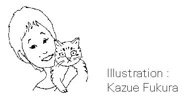

🏠
日
月
縦書き／横書き
いい人 自分らしさ 人間関係 ストレス 欠点 本心 生き方 世間 友達 人生 自信
はじめに
「いい人」とは、なんと響きのいい言葉だろうか。
人は誰でも、人からよく思われたい、よく見られたいという気持ちを持っている。
「あなたって、いい人ね」
と言われて気分を悪くする人はいない。だが、そこに「いい人」の落とし穴がある。人から「あなたって、いい人ね」と言われているうちに、だんだんそんな気になっていき、気がつくと本当の自分を見失っている。
何を隠そう、このわたしこそが、そんな「いい人」病にとりつかれていたひとりだった。若いころのわたしは、自分に自信がなかったので、いつも人の目を気にして生きていた。
きっと、人からよく思われることで、置き場のない自分の心を落ち着かせていたのだろう。自分を安心させる唯一の方法が、自信のない「本当の自分」ではなく、人から見た「いい人」であることだったのである。
本当のわたしは「いい人」とはほど遠い、自分勝手で意地悪で嫉妬深い、いやな女だった。友達の結婚は心から喜べないし、ボランティアも寄付もしたことのないわたし。どこが「いい人」だと言うのか。
偽りの自分にうんざりしながら、夜になると枕をかかえ、わけもなく泣くわたしだった。
ちがう。ちがう。わたしはどう生きればいいの。どうしたら幸せな気分で毎日が送れるの。自問自答の続いた30
代。
そのうち、わたしには「いい人」を演じる余裕がなくなってきた。仕事を失い、結婚もしていなかったわたしは、自分を食べさせていくために、人の目を気にしている場合ではなかった。
もういい。誰に何と思われようがかまわない。わたしは自分のためなら、人の彼氏まで利用して仕事に結びつける、いやな女よ。自分のことしか考えていない、わがままな女よ。ごめんなさい。わたしいま、お金がないからつきあえないわ。
わたしは自分の生活の基盤をつくることで頭がいっぱいだったので、人のことなどかまっていられなかった。人から悪く思われてもいいから仕事がほしかった。
「気の毒な人ね」「わがままな人ね」というまわりの声を尻目に、なり振りかまわず働いた。そんなどん底の中で、わたしはあることに気づかされた。
それは、人からどう思われてもかまわない。でこぼこでもヘタでもいいから、自分の心に正直に生きるべきだという気づきだ。
人から「いい人」と思われることよりも、人から見たらいやな人間かもしれないが、自分で納得できる生き方をしたい。
心からそう思ったとき、わたしは、世間からも自分からも自由になった。
この本は、「いい人」をやめて「自分らしい人」になるための、「いい人」をやめたわたしからのメッセージです。
「いい人」なんて、もうやめた もくじ
・美人は得とはかぎらない
・自分の欠点を愛せる人は魅力的
・目立つ女は狙われる
・人目をひくよりキラリと光る女性に
・実はわたしは嫌われ者？
・関心を自分に向ける、いいチャンス
・思ったことが顔に出るのは嘘がつけないから
・本心を隠して人から好かれてもむなしい
・わけもなく落ち込んでしまうとき
・みんながみんな元気である必要はない
・人生を真剣に生きている証拠
・すぐ人を頼ってしまうのは悪くない
・ひとりで生きていくのはパワーがいるもの
・寂しがりやは「いい奥さん」になる
・さっさと決められればラクになるけれど
・いま、迷う必要があるから迷っている
・自分以外の人には誰もなれないから......
・自分は自分でしかないことを認めよう
・ばかだけど、かわいいわたし
・意識過剰になっていませんか
・自分にだけは嘘をつけない
・人の目を気にして生きている時間はない
・「わたしはわたし」と思えれば、ずっとラクになる
・「いい人」にいい人はいない？
・一番自分らしいと思える自分をめざそう
・相手を喜ばせるために、いい顔をしてしまう
・「いい人」は決して褒め言葉ではない
・自分を殺してまで元気な人を演じても......
・あなたなりの明るさで勝負すればいい
・何が一番似合うか知っているのは自分自身
・自分が好きなものを選び、身につけよう
・少しでも「型」からはずれると変人扱いされる
・「普通」なんてどこにもないから
・人とちがうのは自分らしく生きているあかし
・これでいいと思ったらすべては終わり
・過去の自分はなかったことにする
・やろうと思った日が、はじまりの日
・昔からの友達は親戚みたいなもの
・新しい出会いのための一歩を踏み出そう
・「みんなと一緒」は気持ちがいいけれど
・ひとりで歩かなければ見つけられないもの
・昔にこだわるのは寂しさの渦に落ちるだけ
・過去のことは消しゴムで消してしまう
・本当は変わりたくないと思ってる？
・まずは人の意見に耳を傾けることから
・やる前にできないと決めつけない
・「どうせ」「いまさら」は禁句
・誰に何と言われようと、やった者勝ち
・はじめる前はあんなに心ときめくのに
・飽きたのは関心がなくなったから
・やがて手ごたえのあるものにぶつかる
・つきあいの多さが人気の高さじゃない
・友達は少なくていい
・会社は自分の魅力をアピールする場ではない
・人気がないのは気楽でいいもの
・何でもヘタは損、と思うかもしれないけれど
・愛敬を振りまけない人は信用される
・わたしは感じの悪い女
・いやなことは態度ではっきり示していい
・会社の人間関係にストレスはつきもの
・「ここは動物園」と思おう
・笑い飛ばして切り抜ける知恵を持つ
・肩書きに振りまわされないで
・ぬいぐるみごっこから卒業しよう
・「よくしてあげたい」気持ちから動く
・誰かがちゃんと見ているから
・見られていなくても笑顔をつくれますか
・笑顔のステキな人が一番輝く
・「自分さえよければいい」という考え
・あなたから「小さな気づかい」を伝染させよう
・まわりの存在を意識しよう
・親切に注意してくれる人はいない
・おそるべき、ゲリラ軍団
・いつも全体を見わたす目を持って
・すんなり言葉が出てくる人は光っている
・前向きなメッセージを背中にもらおう
・職場に花をこっそり飾ってみる
・人を喜ばせようという気持ちが自分を輝かせる
・比べることから悲劇がはじまる
・自分に関心を持てば人のことが気にならなくなる
・人に文句をつけるだけの人生はつまらない
・ミニ・コメンテーターになってはだめ
・自分の役を演じきろう
・好きなことこそ、自分自身
・一番向いていることはこうして見つける
・わたしは「すぐやる課」
・やりたいことがあるときが最高
・結果は考えず、まず動こう
・不安から誰かと一緒にいるのはつまらない
・「想像」というひとり遊びをしよう
・「なんとなく感じる」感覚を大切に
・毎日を感じながらすごそう
・懸賞に応募してみる
・何かに挑戦するとは新しい自分を発見すること
自分の魅力に気づいてね
美人は得とはかぎらない
鏡に映った自分の顔をうっとりと眺められる人は、どのくらいいるだろうか。おそらく、ミスユニバースかレースクイーンぐらいしかいないのではないだろうか。
友人にものすごい美人がいた。きれいな人というのは、すみずみまできれいなようで、まつげの先まで美しい。少女漫画の主人公のような星の入った瞳に、スラッとした鼻、ハート型のくちびる。わたしのノッペリした顔とは大ちがい。鏡を見るたびにどれだけ神様を恨んだかしれない。
あんなにきれいだったら、もてるだろうなあ。いいわよね。ステキな人生が送れるにちがいないわ。その点、わたしは......平安時代に生まれたら美人だったわよ、と褒められても、うれしくもなんともない。
ここだけの話、わたしはひとりで歩いているときに、つきあいたくなるようなステキな男性に誘われたことがない。声をかけられたことはなきにしもあらずだが、振り返るなりギョッとして逃げ出したくなるような気持ちの悪いおじさんばかり。
しかし、彼女と一緒に街を歩いていると、男性の視線が痛いように注がれ、喫茶店に入れば頼んでもいないのにチョコレートパフェが出てきたりするのだ。
そのたびに、一重まぶたのわたしは、美人は得だと思ったものだ。
きれいな人はたしかに、人の目をひくので誘われる機会が多いが、だからといって、幸せになれるかというと、これは別問題のようだ。
なぜなら、顔にひかれて寄ってくる男性というのは、自信過剰か見栄っ張りの男とだいたい相場は決まっているからだ。
それに、顔のあまりきれいではない人が不幸になっても気にならないが、きれいな人が不幸になると、とても不幸に見える。
「あんなにきれいなのにどうして？」と人は思う。きれいな人は目立つので、まわりがそっとしておいてくれない。その点、きれいじゃないといい。
自分の欠点を愛せる人は魅力的
人生は、予想もつかないことが起こるので、いつもいい調子というわけにはいかない。
金持ちはお金が減る心配をしなくてはならない。あるものはなくなる。それと同じで、きれいな人には申しわけないが、きれいな人は崩れるのも早い。あまりきれいではない人は、崩れるのも遅いし、崩れても前から崩れているので落差があまりないという、いい面もある。
学生時代に美人と言われていた人に20
年後に会ってみてください。びっくりするほど変わっているので。外国の女性を見ているとわかるように、目鼻立ちのはっきりしている人は崩れると魔法使いのようになりがちなのだ。
ところが、あまりきれいじゃない人が中年になると、いい感じになることが多い。太っている人はとくに肌に張りがあるように見える。ある年齢になると、目鼻立ちではなく、その人のかもしだす雰囲気が美しさにつながるのだ。
あなたのお母さんを見ればわかるはずだ。丸顔で目も小さいかもしれないが、なんともいえない暖かさがあるでしょ。
わたしも、一重まぶたがいやでしかたがない時期があった。友達の大きな二重まぶたを見ると羨
ましくてしかたがなかった。鏡を見るたびに、目を見開いて二重になる訓練をしたりしたものだ。
でも、顔のパーツは自分が選んだわけではなく、神様がくれたもの。つまり、この顔こそがわたしなのである。そのことに気づいてから、わたしは自分の顔を愛せるようになった。
どんなにずんぐりむっくりの鼻でも、それはあなたの個性。知り合いに、ごつくて女性らしさのあまり感じられない顔の人がいるが、彼女はみんなから好かれている。なぜなら、彼女は自分の顔にコンプレックスを持っていないからだ。
どんなに造形的に美しくない顔でも、堂々としていると、それが魅力になるのである。結局、人は顔のつくりではなく、その人自身の魅力にひかれるということなのだ。
自分の顔の嫌いなところを「かわいい」と思ってしまった人の勝ちですよ。
わたしって印象に残らない女？
目立つ女は狙われる
わたしたちは大きな勘ちがいをしているところがある。そのひとつが「目立ちたい」という願望だ。
わたしたち女性は、目立つ人はもてる。目立つ人は人から引き立てられる。でも、目立たないわたしは、どこに行っても何も起こらない。損だわと思ってはいないだろうか。
人が集まるところに行くとき、目立つ女性のところに人の輪ができていて、自分は誰の注目も浴びずに、お皿を持ってひとりで食べているときほど、むなしいものはない。とくに現代は自己アピールの時代なので、人の印象に残らないと何もはじまらないことが多い。
でも、よく考えてみてください。目立つことはそんなにいいことかどうか。あなたは目立つよさにしか目を向けていないが、目立って得することより目立って損することのほうが多いのをご存じないのではないだろうか。
目立つ人は、人の目につくということ。人にはいろいろな人がいるので、中には好意を持ってくれる人もいるが、それがくせ者なのである。
好きな人から好意を寄せられるならいいが、あなたをよく知らずに声をかけてくる男は、はっきり言って、程度が知れている。
目立つ女は、悪い男に狙われる。悪い男は目につく女性に近づいてくる。その女性がステキだからとか、そういう理由ではなく、単に目についたから誘ってくるのだ。そこをもてるなどとまちがってはいけない。
はっきり言って、目立つ女性は自分から危険をしかけているようなものなのである。若い人はまだ人生経験が少ないのでわからないと思うが、賢い女性は目立たなくしているものですよ。
人目をひくよりキラリと光る女性に
先日、とてもステキな女性に会った。その人は退職したばかりと言っていたので60
歳くらいだろうか。服装は地味なうえに顔も地味。もう少し、明るい色の服を着てアクセサリーでもつけたほうが若く見えるのではないか、とアドバイスしたくなりそうな女性だった。
彼女は控えめに控えめに生きてきたようだった。ある日、同じ習いごとの生徒という関係で、先生を囲んでお茶を飲んでいた。たわいもない話をしていたのだが、その人と話をしているととても心が和み、いつまでも話していたい気持ちにかられた。控えめだが、とても誠実で心のある人だったからだ。
おそらく大勢の中にいるときは、どこにいるかわからないような存在の人にちがいない。わたしは彼女を見ていて、目立たない人の中に本当に光る人がいるということを認識させられた。
ぱーっと華やかで目立つ人は、人目をひくかもしれないが、尊敬されることは少ないような気がする。女優ではないのだから、一般の人は、人の印象に残る人である必要はないのだ。
目立たないのはいいこと。悪い男が寄ってこないので、トラブルに巻き込まれる心配も少ない。あなたが悩むべきことは、目立たないことではなく、内面が磨かれているかどうかだ。
目立つ女性より、控えめだが人の話をよく聞き、素直に自分の感じたことを話せる。こういう人のほうが、よっぽど魅力的ですよ。
自分磨きに精を出しましょう。あなたは、目立たない地味な女でいいじゃないですか。
人から好かれないメリットもある
実はわたしは嫌われ者？
若いころのわたしは、人から好かれたくてしかたがなかった。いえ、ごく最近までその傾向はあったと言える。人が集まる席に行ったときに、話す相手が見つからないことほどつらいことはない。
「あら、お久しぶり」と話しかけたのに、軽くあしらわれたときの寂しいことったらない。そんなとき、わたしは自分がそれほど人から好かれていないことを再認識させられるのである。
あなたにも経験あるでしょ。ひとりぼっちの場面を想像するうちに、人の集まる席に出るのがいやになり、登校拒否の子どものように行きたくなくなることが。
わたしは仕事がら、文化人が多く集まる会に呼ばれることがある。わたしにとって複雑な気分にさせられる集まりである。なぜなら、わたしのほうはテレビなどで相手を知っていても、向こうはわたしのことを知らないので、誰も話しかけてくれないからだ。本当につらい。
そういえば、めずらしく話しかけてくれた人がいた。忘れもしないその方は、わたしにこう言ったのだ。
「あら、松原さん、松原さんよね。わたし、あなたにずっと以前からお会いしたいと思っていたのよ」
お会いしたかったと言えば好意を持っているのが普通なので、胸をはずませながら耳を傾けていると、
「あなたが書いた文章のことで、わたし、傷つけられましたの。そのことをずっと言いたくて、あなたに会いたいと思っていましたのよ」
あのときほど、どんな表情をしたらいいものか、困ったことはなかった。
人は面と向かって言わないが、わたしはけっこう嫌われているのかもしれない。そのことを自覚した瞬間だった。
関心を自分に向ける、いいチャンス
人に好かれている人は忙しい。なぜなら、人から誘われるからだ。
「今度、映画に行きませんか」
「食事に行きませんか」
「○○さん紹介してくれない」
一見、いいように見えるが、女も30
歳すぎたら人につきあっている時間はない。その点、人から好かれていないと、自分の時間ができていい。
わたしもそうなのだが、わたしたちは、人を意識しすぎる傾向があると言える。人から好かれたいという気持ちは、「他人」を意識しているから出てくる感情だと言えはしないだろうか。もし、関心が「人」ではなく「夢」や「自分」にあれば、人からどう思われようが、気にならないはずだ。
人から好かれていない、と感じたときこそ、「人」に対する関心を捨て去るときなのである。
好かれない人は誘われないので孤独だが、いいじゃないですか、ひとりでいればいいのですよ。その間に、次のことの準備をしよう。
好かれないというのは決して悪いことではない。みんなから好かれる人は好かれる人にまかせておいて、あなたはあなたの道を行く。
少なくとも、あなたは親から愛されている。あなたを好いてくれる人がこの世にひとりいればいいではないか。タレントではないのだから大勢に好かれることはないのだ。
「好かれない」ことのマイナス面だけ見ないでね。どんなことにも両面があることを忘れないでほしい。ピンチの後はチャンスというじゃないですか。
好かれないときこそ、関心を「人」から「自分」に移行する、いいチャンスなのである。
「愛想が悪い」、けっこうじゃない
思ったことが顔に出るのは嘘がつけないから
「あなたって愛想が悪いのね」と言われて喜ぶ人はいない。なぜなら、女性の魅力はなんといっても「かわいらしさ」と「愛想のよさ」にあるからだ。愛想の悪い、ぶすっとした女性など誰がいいと思うだろうか。
あなたの会社にもいませんか。いつもニコニコと愛想のいい、まるでファーストフードの店員のような女性が。そんな人を見ていると、真似したいとは思わないものの、自分にはできないと思いますよね。
わたしはどうも、思ったことがすぐ顔に出るタイプの人間らしい。らしいというのは、自分では顔に出ていると思ってないからだ。自分なりに、感情をコントロールして穏やかな顔をつくっているつもりなのだが、相手から見るとお見通しらしい。
以前、初対面の人から「わたしのこと嫌いでしょ」と言われ面食らったことがある。「いいえ」と口では言ったものの、顔には「大嫌い」と書いてあったようだ。
「このあいだの集まり、あなたの嫌いな人ばかりですごくいやだったでしょ」と指摘されるたびに、どうにかしなくちゃと悩んだ時期もあったが、最近ではすっかり開き直っている。
というのは、これが自然なわたしの姿だからだ。
「いやだ」と思っているのにニコニコできる人は、愛想がいいと言えば、聞こえがいいが、逆に言うと、ごまかすのがうまいと言うことができる。
愛想がよければ対人関係がスムーズにいくかもしれないが、何を考えているかわからないので不気味ということもできる。つまり、何ごとも両面を持っているのである。
本心を隠して人から好かれてもむなしい
心で思っていることが顔に出る。思っていることが隠せない人は、相手に対していい印象を与えないかもしれないが、正直な人と言うことはできないだろうか。
いいと思ってもいないのに「いいですね」とニコニコしながら言える人を、人は大人だと言う。でも、それはずるい大人だ。
知り合いになんとも愛想のいい女性がいた。もちろん彼女は男性にもてたし、セールスの仕事をしていたので顧客をたくさん獲得することができた。しかし、あるとき、冷淡な目をした彼女を見たとき、恐ろしくなった。それ以後、距離を置いてつきあうようになったのは言うまでもないことである。
「あなたって、すぐ顔に出るのね」と言われるのは気分のいいことではないが、そんなときは、落ち込まないで「あなたって正直ね」と褒められたと思おう。あなたは思っていることを隠せない人なのです。ステキじゃないですか。
愛想がいいと思われたい気持ちを捨てて、愛想の悪い自分を貫きましょう。それがあなたなのだから。愛想がいいのは愛想がいい子にまかせておいて、あなたは自分に正直に生きましょうよ。
すぐに落ち込むのは、よく考えるから
わけもなく落ち込んでしまうとき
「落ち込む」という言葉はマイナスイメージを持った言葉だ。「落ち込む」と聞いて、いいことを想像する人はいないはずだ。
「わたしって、すぐに落ち込むのよね」の後に続く言葉といえば「いやになっちゃう」ではないだろうか。
最近でこそ頻繁でなくなったが、わたしも30
代ぐらいまでは毎日のように落ち込んでいた。まるで、落ち込むことがお風呂に入るのと同じ日課のように。
何か特別な失敗をしたわけでも、誰かにいじめられたわけでもないのに、気分が晴れない。落ち込みやすい人というのは、ただ空気を吸っているだけで落ち込むのである。
人にはもともと持っている明度がある。色彩を勉強した人はわかると思うが、同じブルーでも紺色もあれば淡い水色のティファニーブルーもある。人も同じで、生まれ持った明度があるような気がする。
以前、著書の中で「落ち込むのは3
日で十分」という話を書いたことがある。これはわたしが落ち込んでいるときに先輩から言われた言葉だ。
「何日、落ち込んでいるのか知らないけれど、長く落ち込んでいれば這い上がれるというものじゃないよ」
3
日も落ち込んだ気分にひたっていれば十分だという意味だ。
落ち込んでいるときというのは、落ち込みの原因が問題なのではなく、本人は気づいていないが、悲劇のヒロイン役にひたっていたい場合が多い。
みんながみんな元気である必要はない
どんなにつらいことがあっても、どんなに人からだまされても、どんなに期待はずれなことがあっても、落ち込まない人は落ち込まない。大切な人を失っても、笑顔で日々を送っている人はたくさんいる。
自分の予想どおりに仕事が進まなかったり、相手が理解してくれなかったというだけで落ち込む人もいる。
すぐに落ち込んでしまうあなたは、落ち込み癖を持った人と心得よ。
落ち込み癖というと、悪いことのように聞こえるが、無理に直すことはない。もし直すとしたら、落ち込むのは悪いことだとする、その考え方を直したい。
世の中では、暗いより明るいほうがいい、グジグジした人よりさわやかな人のほうがいい、意地悪な人より親切な人のほうがいいと、明度の高いことをよしとする傾向があるが、その考え方こそ改めるべきではないだろうか。
人は誰でもさまざまな要素を持っている。明るいだけの人はいないし、意地悪なだけの人もいない。落ち込みやすい面は誰でも持っている。ただ、それをいやなことと思っているかどうかだ。
人生を真剣に生きている証拠
いつも明るく元気な人を見ると、つい「いいなあ」と思ってしまうかもしれないが、その人だって、いつも元気とはかぎらない。元気なのは人前だけかもしれない。
わたしも人から「いつも元気ね」と羨ましがられるが、自称「元気の配達人」のわたしが暗い顔なんかできないでしょ。
わたしの場合、「元気の配達人」は自分を奮い立たせるために考えたキャッチコピー。もし、あなたが落ち込みやすい自分がいやで変えたいと思うなら、わたしのように自分にキャッチコピーをつけてみたらどうだろうか。
「元気印の○○ちゃん」とか。でも、無理をするとよけいに落ち込みますよ。
落ち込みやすいのはあなたの個性。それは決して、悪いことではない。落ち込む人は、ものごとをよく考える人と言うことができる。そうですよね。よく考えるから落ち込むのです。
でも、落ち込みやすい性格は、その人が神様からもらった特徴なのだから大事にしよう。元気な人は元気な人。あなたは落ち込みやすいあなたを生きればいい。なぜなら、それがあなただからである。
寂しがりやは寂しがりやのままでいい
すぐ人を頼ってしまうのは悪くない
誰かがそばにいないと楽しめない。そういう人は意外と多いのではないだろうか。買い物に行くのも、習いごとに通うのも誰かと一緒。日本の女性の多くが、複数で歩いているのを見ればわかる。
一歩、街に出ると、若い人からおばさんまでがつるんでいる光景を見る。カフェやレストランの中のうるさいこと。複数でしゃべっているからどうしても声が高くなる。一見楽しそうに見える光景だが、あの人たちはひとりになったら、どんな顔をしているのだろうか、と時々思う。
寂しい人ほど、外ではしゃぐものだ。犬を見ていればわかるように、寂しがりやの犬ほどよく吠える。
先日、ひとりになったことのない主婦に会った。お稽古に行った先で出くわしたのだが、話を聞いていると、いつも夫か友達と一緒に行動していると言うではないか。その日も個人レッスンにもかかわらず、友達と一緒にきていた。
「あなたが習うなら、わたしも習うわ」
「あなたが食べに行くなら、わたしも行くわ」
家庭でも、夫の言いなりらしい。誰よりも早く起きて食事のしたくをし、夫の帰りを待つ。わたしならとてもたまらない生活だが、彼女にとって、それが心地いいのであるから、他人がどうこう言うことはないのかもしれないが。
以前のわたしなら、なんて人をあてにした寂しい生き方かしらと軽蔑するところだが、なにも皆が皆、強く生きる必要がないことに気づいてから、相手を認められるようになった。
寂しがりやの人は、強くなる努力などしないほうがいい。大事なのは、寂しがりやの自分を認めることだ。大事なのは自分を偽らないことなのだ。
ひとりで生きていくのはパワーがいるもの
「わたしって、誰かがそばにいないと生きていけないの」と心からそう思うなら、そばにいてくれる誰かを求めればいい。
そう、寂しがりやの人は、キャリアウーマンなんかやってないで、いますぐ結婚するべきだ。
これは最近になって気づいたことなのだが、わたしは寂しい人だとずっと思っていたのだが、実はそうではないことに気づいた。わたしの場合、お金がないと寂しいが、人がいないことで寂しいと思ったことはない。
シングルでずっといられる人というのは、基本的に寂しがりやではない場合が多い。ひとりでいるのは、仕事が好きとかそういう問題ではないのだ。
ひとりで生きていくにはパワーが必要だ。エネルギーが必要だ。このエネルギーというのは持って生まれたものなのである。ひとりの人は相手がいない分、結婚している人の2
倍、またはそれ以上が必要ということになる。
だから、寂しがりやさんは、もともとエネルギーが少なく生まれてきた人ということができる。寂しいのは、あなたが悪いわけではないのです。もともとエネルギー不足の体質なだけ。エネルギーの少ない人は、誰かと一緒に暮らすようにできているのである。
寂しがりやだからいやになる、なんて言っていないで、いますぐに結婚しましょう。結婚はあなたを落ち着かせてくれる。仮に頼りにならない夫と結婚したとしても、ひとりでいるよりは寂しくないはずだ。寂しい気持ちをずっと、かかえて生きていくのは精神衛生上よくないですよ。
寂しがりやは「いい奥さん」になる
寂しがりやなのは、あなたの欠点ではなく、あなたの個性だということを忘れずに。結婚しましょう。どんな男でもいいではないですか。一緒の家に住めるだけでいいではないですか。
結婚していないわたしが薦めるのもなんだが、結婚は好きな人と一緒になるためにするのではない。結婚しても寂しさは埋まらないと言う人がいるが（わたしも言ったことがあるが）、ひとりでいるよりはましだ。
「わたしは寂しい女なの」と公言してしまうと、いい相手も見つかるのではないかしら。
あなたは弱い。ひとりでは生きていけない。そのことを認めてしまおう。肩ひじ張って生きることないですよ。
さあ、教会に行って結婚式の予約をしましょう。寂しがりやの人がひとりでいるのは体に毒です。ひとりのわたしが言うのだから本当よ。
迷うあなたには可能性がある
さっさと決められればラクになるけれど
知人にまったく迷わない人がいる。彼女は学生時代から将来の職業を決めていて、そこに向かってがんばってきたので迷うことがなかったらしい。目的がはっきりしている人は羨ましい。迷う人というのは、目的を持っていないから迷うのだ。
自称「迷いのデパート」のわたしは、目的に向かって迷わずに進む彼女を、同じ人間とは思えないまなざしで見ていた。同じ年、同じような環境に生まれても、人はこんなに違うのである。
「迷う人」より「迷わない人」のほうが、よく見えるのは、迷うことはよくないことと認識しているからではないだろうか。
認識もへちまもない。迷っている本人が一番、迷っていることをいやがっているのだから。
洋服を買うときは迷わないのに、仕事や生き方になると迷ってばかりなのはなぜだろうか。
「この仕事でいいのかしら。もっと自分に合ったことがあるんじゃないかしら」
わたしもこのフレーズを何回使ってきたかしれない。
そのたびに仕事をやめ、新しいことをはじめるわたしだった。20
代のはじめのころは、それでも楽しい「やりたいこと探し」だったが、年とともに憂うつになる一方だった。
迷わずに、ひとつの職業をめざしてきた友人は、収入も社会的地位も安定し、ひとりの自立した女性になっていた。で、「迷いのデパート」のわたしと言えば、まだ、なりたい職業もわからず、それどころか結婚もしたいのかしたくないのかもわからず、ただ、その日をすごしているだけだった。
迷わない人のことを悪く言う気はないが、迷わない人は迷いたくない人なのだ。早めに方針を決めてしまえば、迷わずにすむ。
「中学生のときから公務員になるって決めていました」という人は、本当に公務員が夢だったのだろうか。
公務員が悪いというのではないが、若いときは夢を持ってすごすとき。人生には未知の可能性がいっぱいあるのに、それを覗きもせずに安定した生活を夢見るなどというのは、わたしにはできないことだ。
いま、迷う必要があるから迷っている
とはいうものの、30
代になってまで夢を見ていたら、自分でもいやになりますよね。どうしたらいいかわからない。そんなときの気持ちは本当に、死にたいくらいつらいものだ。
しかし、わたしはここで言いたい。迷っている状態は、必要だから迷っているのだと。
だから、迷っていることを避けないでください。意味があるから迷っているのです。迷うことに意味がある。なんでもスッと行っている人を見ると、羨ましく思うと思うが、死ぬまでそのままということはない。一生の間には、早いか遅いかのちがいだけで、どんな人でも同じ分量だけ悩むようになっている。若いときに迷わない人は、年をとってから迷いの倍返しにあう。
迷っている人を弁護するわけではないが、迷っているのは、あなたが自分の気持ちに正直だからだ。
このことに気づいたのは、わたしもつい最近のことなのである。
迷いながら生きているというのは、迷路をさまよっているようなもの。迷路には花が咲いていたり、家があったり、犬が突然飛び出してきたり、さまざまなことに出くわす。ということは、新しい可能性にも出会うチャンスがあるということになる。
いま迷っている自分を楽しむ余裕はないかもしれないが、とことん迷えば、迷路から出られるときがくる。いまは、迷路をグルグルまわっているとき。迷わなくては得られないものはたくさんあるのだから、迷う自分を認めてしまいましょう。
迷路でしかできない体験を味わおう。迷路で学ぶことはたくさんあるのだから。
ほら、少しラクになってきたでしょ。
他の誰でもない、このわたしで行こう
自分以外の人には誰もなれないから......
きれいな人を見ると、あんなふうにきれいになりたいと思い、頭のいい人を見ると、あんなふうに頭がよかったらと思う。お金持ちの人を見ると、あんなふうになれたらなあと思うものだ。
勉強なんか向いていないのに、大学に入ろうとする人の多いこと。仕事なんか向いていないのに、就職しようとする人の多いこと。みんな、自分ではない人になろうとする。
わたしも若いころは、外人のようになりたくて、髪を染めたり外人っぽい大げさなしぐさをしたり、あげくの果てには留学までしたことがある。本当は勉強ほど嫌いなものはないのに。
わたしは自分が好きではなかった。足は短いし、顔は平安時代だし、数字には弱いし、ずば抜けたところがひとつもない自分にうんざりしていた。
そこそこの自分がいやでしょうがなかった。どうして、わたしは財閥の家に生まれてこなかったのかしら。そうすれば、いまごろ御曹司
と結婚して......などと本気で思ったものだ。
顔は化粧で、頭は努力で、多少は改善できるが、多少というだけで、不公平なことに、持って生まれたものを根本から変えることはできない。
人は、学歴をつけたり作法を身につけたりして、より高い自分になろうとする。また人は、上昇志向の人、努力する人を見て、すばらしいと思う。
でも、それはしょせん、人から見える範囲のことで、本質的なものが変わったわけではないのだ。見栄っ張りの人は見栄っ張り。いじわるな人はいじわるのまま。やさしい人は立場がどんなに変わってもやさしい。
そう、どんなに外側の洋服を変えても、わたしたちは自分以外の人にはなれないのだ。
自分は自分でしかないことを認めよう
わたしはわたしでしかないし、あなたはあなたでしかない。いくらお金持ちになろうが、あなたはあなたから逃れることはできない。
よく、外国に行くと、外国人になってしまったかのような振るまいをする日本女性がいる。外国人とはさも親しげに話すのに、日本人に対してばかにした態度をとる。外人っぽいメイクなんかしちゃって。ああ、勘ちがいという人がいますよね。
彼女たちは、自分以外の人になりたいがゆえに、ああなったのだとわたしは思っている。わたしもそうだったが、自分を見失っている人は、人に対してとても意地悪だ。
本人は気づいていないが、こちらから見たら、ただの感じ悪い日本人でしかないのに、アメリカ人になったつもりでいる。人のことは言えない。昔のわたしも同じだった。
そうなのです。残念なことに、わたしたちは、どんなにあがこうが自分以外の人にはなれないのです。
だから、まず、そのことを認める必要がある。
ああいうふうになりたいなあではなく、「このわたしで行こう」と、いやな自分を認めることが大事なのだ。
ばかで見栄っ張りの自分。サラリーマンの娘である自分。たいしたことない自分。認めたくないかもしれないが、それがあなたなのだ。
そして、それは決して悪いことではないのだ。そこをまちがえないでほしい。それがあなたなのだから、ばかで見栄っ張りでなくなったらあなたではないのだ。
ばかだけど、かわいいわたし
人から見てステキな人になるのではなく、いまのあなたを生き抜くとき、充実した自分になっているのではないだろうか。
わたしも長い間、だめでばかな自分を認めることができなかったひとりだが、利口な人は利口な人にまかせることにしてから、平気になった。ここだけの話、わたしは、自分はばかだけど、かわいいと思っている。ばかでしょ。
アハハ、でも、それがわたしなのです。だから、あなたもあなたで行きましょう。見栄っ張りだけどかわいい自分でいいじゃないですか。
欠点を変えてより高い自分になるのではなく、たいしたことない自分を認めることから、すべてははじまるとわたしは確信を持って言うことができる。
あなたには悪いけど、わたしもあなたもたいしたことないってことよ。
誰だって、たいしたことない欠点だらけの自分を認めたくないものだ。でも、実は欠点だと思っていることこそ、自分の魅力なのである。しかし、このことに気づいている人は少ない。
欠点を悪いことと思うのではなく、欠点を自分の個性としてとらえればいいのだ。
頭が悪いのも、仕事が遅いのも、嫉妬深いのも、それはあなたの欠点ではなく個性なのである。
もし、あなたが「わたしってロバのように遅くてとろいの」と人に言うことができたとしたら、もう、あなたは昔のあなたではない。自分の欠点を笑えるようになった人の勝ちですよ。
さあ、わたしってたいしたことないの、と口に出して言ってみよう。だんだん気がラクになって、なんだか楽しくなってきたでしょ。
あなたを見ているのはあなた
意識過剰になっていませんか
こんなことをしたら、まわりの人からおかしいと思われる。そう思うと、行動を起こせないことないですか。また、逆に、みんながするから自分もしないと変な目で見られるからすることないですか。
「まわりがうるさいので」と言って、結婚する人がいる。「いつまでも平社員では恥ずかしい。主任にならないと」とあせる人がいる。
こういう人は、いつも、他人の目を気にして行動している人だということができる。
世間から見て、恥ずかしくない自分でありたいと思う。わたしにも、そういう時期があったのでわかるが、世間っていったい誰ですか。
隣のおばさん？ 会社の人？ 町内の人たち？ 一般市民？
隣のおばさんからよく見られたいために、あなたは生きているのですか。隣のおばさんからよく思われたいために、行動をとるなんてばかげてませんか。
言いにくいことをはっきり言うけれど、あなたのことに関心を持っている人などいない。
隣のおばさんから「まだ、ひとりなの」と言われたとしても、おばさんは、そういう言葉しか知らないから使っているだけで、あなたが結婚しようがしまいが、まったく気にしていない。
「まだ、おひとり」は「あら、今日は天気がいいのね」と同意語。
隣のおばさんの興味は自分の子どものことだけ。他人の娘のことなど、どうでもいいのですよ。あなただって、隣の息子のことなどどうでもいいでしょ。
あなたが気にするほど、世間はあなたを気にしていない。まず、そのことを認識するべきだ。あなたのことに関心のない世間を気にして生きるのは、とても愚かなことだ。もし、気にするとしたら、あなたの中の本当のあなただ。
自分にだけは嘘をつけない
あなたを気にしているのは、ほかでもないあなた自身。だから、一番大事にしなければならないのは、あなた自身のうちなる声なのである。
あなたはどう生きたいのか。結婚しか道がないのか。主任に心からなりたいのか。
うちなるあなたに聞いてみよう。人の噂話ばかりしている親戚や隣のおばさんを意識して暮らすなんて、愚かなことですよ。
人からよく思われたいという気持ちは誰にでもあるが、いくら人から羨ましがられても、心はうつろでは意味がない。
わたしも、人の目を気にして生きていた時期があったが、自分に注目しているのは自分だとわかってから、逆に生きるのがラクになった。
人は裏切るけれど自分は裏切らない。だったら、一番信用できる自分に正直に生きましょうよ。
人が何かを言ったら、「今日は天気がいいですね」と翻訳して聞いていればいいのよ。人は、ろくなことを言わないのだから。
あなたを見ているのは隣のおばさんでも親でもないあなた自身。だったら、自分に正直に生きるべきである。どうしたら、自分は幸せだと思えるのか。胸に手をあてて自分の声を聞きましょう。
いまはOLをしているが本当は働きたくない？ 本当はやりたいことがある？ 平凡な生活がしたい？ 日本を飛び出したい？
人と同じ人生を歩むのは簡単だが、自分で自分の人生を決めるのはむずかしい。なぜなら、判断をくだすのは自分なので、人のせいにできないからだ。
自分の気持ちに正直になれば、やりたいことも進むべき道も必ず見えてくる。
「いい人」なんて、もうやめた！
人の目を気にして生きている時間はない
わたしの口癖は「どうでもいい」である。わたしは毒舌なので時々「松原さん、そういう言い方をすると誤解されますよ」と忠告を受けることがある。昔のわたしなら、ギクッとして訂正するところだが、いまのわたしは平気だ。
理由は「どうでもいい」からである。わたしの発言を誤解されようがされまいがどうでもいいのだ。相手が死んでしまうというなら撤回するが、傷つく程度ならいいではないか。わたしは、ただ、思ったことを言うだけ。傷つくのは相手の勝手。いやな人でしょ、わたしって。
いつごろからだろうか。人からどう思われてもいいと、はっきりと言えるようになったのは。たぶん、わりと最近のことだと思う。
なぜ、そのように切り替えることができたかというと、
「人生は短い。人を気にしている時間はない」
ということに気づいたからだ。みなさん、人生は一瞬。人の目を気にして生きている時間はないですよ。
年齢は、人生の師だ。これまで生きてきた時間と残り時間を比べ、残り時間の割合が少ないと感じたときから、わたしは変わった。
わたしはいま、ぜんぜん「いい人」ではない。つきあいは悪いし、気分が乗らなければドタキャンもする。行きたくないけど行かなくてはなんて、昔していたようなことはしない。
なぜなら「いやな人」と思われてもいいからだ。いまのわたしの中には、自分のことを話題にされるより、無視されることのほうを望む自分がいる。
人から好かれたいという気持ちを捨て、自分を見て歩くようになると、かまわれることより、無視されることに喜びを得るようになるから不思議だ。無視されても充実して生きていけるというのは、人から解放されている証拠ではないだろうか。
「わたしはわたし」と思えれば、ずっとラクになる
いつも人を求めていては、外ばかりに気をひかれているので、自分をつくることはできない。
無視されたときこそ、自分らしく生きるチャンスなのだ。だから無視されるって、決して悪いことではないのですよ。
昔なら、わたしのことをよく言っていたという話を聞くとうれしかったが、いまは話題にしないでいいのにと、心の中で思う。人がどう思うかより、自分で自分が納得できる人に、わたしはなりたいと思っているからだ。
何とでも言ってちょうだい。そう思えるようになると、生きるのがラクですよ。不思議なことに、「いい人」をやめてそのままの自分で生きていると、いつの間にか、まわりに人が集まってくる。人は、本当は「自分らしい人」にひかれるのでは。
さあ、「いい人なんて、もうやめた」と声に出して言ってみよう。めざすなら、「いい人」ではなく「自分らしい人」ですよ。変でも、いじわるでもいいじゃないですか。それが、自分なのだから。自分に自信を持って生きようよ。
自分に正直になろう
「いい人」にいい人はいない？
「容疑者ですか。あの人はとってもいい人でしたよ。いいお父さんで子どもと自転車で遊んでいるのをよく見かけました。信じられません。あんなむごいことをするなんて」
事件現場でよく耳にする話だ。
「いい人」？ わたしたちは何を基準に「いい人」と決めているのだろうか。
分析するに、「いい人」の条件その1
は礼儀正しい、その2
は家族仲がいい、そして、その3
はおとなしい。つまり、まわりに迷惑をかけない人が「いい人」ということになる。
隣の家の音がうるさいと怒鳴り込んだり、頼まれごとを断ったりする人は決して「いい人」とは言われない。
自分の意見や主義主張のある人は、「いい人」にはなりにくいのだ。「いい人」というのは、いてもいなくてもいい人のこと。当たり障りのない人のことをいうのかもしれない。
思い出すだけでゾッとするのだが、わたしにも「いい人」だった時期があった。
お金を貸してと頼まれて、貸してしまったことがある。わたしは、相手からしたら「いい人」だった。ところが、相手が返さないのでお願いしたところ、とたんに「いやな人」にされてしまったのだ。そのときわたしは、「いい人」というのは「良い人」ではなく、「都合のいい人」であることを思い知らされた。
何でも「いいですよ」と言う人は、「いい人」と言われる。相手を拒否できないのはなぜかと言うと、拒否したら嫌われるので、それがこわいからだ。
「あの人っていい人なのよ。いつもおごってくれるの」
ということは、おごってくれるから「いい人」なのであり、おごらなくなったらただの人になる可能性が高い。
一番自分らしいと思える自分をめざそう
知り合いに、気前のいい人がいる。まわりに集まってくる人は、いつも彼がおごるものだと思っている。その人はもう言えないのだ、「割り勘にしようよ」と。気前がいい人は気が弱いものだ。
「いい人」はつらい。あなたも「いい人」を演じている自分にうんざりすることがあるはずだ。「いい妻」「いい母」「いい友人」......。
一度、「いい人」を演じてしまうと、なかなかその役から下りられないものである。「お金ないんだ。だから割り勘にしてよ」と言ってしまえばいいものを、あまりに「いい人」に馴染んでしまっているため、もう本当の自分に戻れない。
そういえば、こういうことがあった。
ずいぶん昔の話だが、わたしが書いた本『女が家を買うとき』（文藝春秋刊）がドラマ化され、収録スタジオに行ったときのことだ。主演は桃井かおりさんだったので、一緒に写真をとってもらえると、うきうきしていた。なんていったって、わたしは原作者なのだから。
ところが、彼女はわたしの前を素通りしてしまったのだ。
「いやな人！」
そのことを母に話したところ、母からこう言われた。
「桃井さんって、正直な人なんじゃないかしら」
そうなのです。大事なことは人から見て「いい人」と思われることではなく、自分に正直なことなのです。
ただの「都合のいい人」になる危険
相手を喜ばせるために、いい顔をしてしまう
25
歳ぐらいのとき、小さなブティックを経営していたことがある。ニットのメーカーの仕事をやりながら、片手間にはじめたお店。わたしにとり、ブティックをやっていたあの数年間は、消し去りたいほどつらい時間だった。
あまり人に話していないが、このさい話そう。自分の店を持つのは女の子の夢。でも、何かをはじめるときというのは、いつも自分の意志とはかぎらない。やる気はなくても、なんとなく流れでやる羽目になることもある。
自分がそうだったから言うわけではないが、世の中、断れなかったからやることになった、という人は意外と多いのではないだろうか。
わたしの場合、ブティックを持つことに憧れていたわけでも、やりたいという強い意志があったわけでもない。「わたしたちのブティックを譲るからやってくれない？」と誘われたときに断れなかったので、やることになったのだ。
わたしも甘かった。
「一緒に手伝うから」という甘い誘惑。彼女はわたしより一回りも年上の、仕事も家庭も両立しているスーパーウーマンだった。憧れの女性、だからこそ、彼女からの誘いに心が動いたのだ。
だますつもりはなかったと思うが、相手にとってわたしは「いいカモ」だったのかもしれないと、いまになると思う。
エネルギッシュな彼女は輝いていた。そんなステキな女性から誘われて、「ノー」とどうして言えるだろうか。何もかも、いまになるとなのだが、わたしは「自分」を持っていなかったので、相手が喜ぶことをしてしまったのだ。
「いいわ。じゃあ、やります」
「いい人」は決して褒め言葉ではない
わたしはとても「いい人」だったので、相手はたいそうかわいがってくれた。そう、最初のうちは。そりゃそうですよね。たいして売れない店の権利を買ってくれたのだから。
まあ、その店の売れないこと、売れないこと。彼女が経営していたときは売れたそうだが、わたしになってからはまったく売れない。もともと売れなかったのかもしれない。商売をやったことのある人はわかると思うが、売れない店ほどつらくて苦しいものはない。
商品が売れなくても家賃や人件費は払わなければならない。売れないからといって新しい服を仕入れないわけにはいかない。売上はないのに仕入はしなくてはいけない状態......。ああ、思い出しただけでも胃が痛くなる。
わたしに権利を譲った彼女は、夫の転勤でアメリカへ行ってしまった。
まわりの人からは「若いのに、ブティックなんか持っちゃって、すごいわね。やり手ね」と羨ましがられていたが、わたしは資金繰りで死にそうだった。
ここだけの話だが、本当に死にたかった。何もしなくても、一日すぎるだけでお金がなくなっていくこわさ。すべては中途半端な気持ちで乗ってしまったことに原因があったのだが、そんなことを反省している余裕はなかった。
お店経営は、並たいていの神経ではやっていけない。儲かっているときはいいが、いったん歯車が狂い出すと、雪だるまのように借金が増えていく。わたしには、サラ金の返済ができず自殺する人の気持ちがよくわかる。
店を処分することにより、雪だるま地獄から抜け出した20
代の苦い苦い思い出。憧れの女性から「いい人」と思われたかったばかりに、泥沼に足を踏み入れてしまったわたしだった。
いまになると、わたしは単に「都合のいい人」にすぎなかったのだと、客観的に自分を見ることができるが、よく思われたいという気持ちを捨てて行動することがいかにむずかしいか。
「いい人」をしそうになったら、もしかして自分は「都合のいい人」なのではと、一度自分を疑ってみる必要があるのではないだろうか。それから行動しても遅くはないはずだ。
そんなに明るいのがいいこと？
自分を殺してまで元気な人を演じても......
知り合いにいつも陽気で元気な人がいる。とにかく、彼女は根っから明るい。いつ会っても100ワットの電球のような明るさを振りまいている。
ある日、「いつも明るくて羨ましいわ」と言ったところ、彼女は苦笑した。驚いたことに、家にいるときは、海底に沈んだ貝のようだというのだ。
その言葉にわたしは複雑な気がした。なぜなら、わたしがつきあっている彼女は、本当の彼女ではないということになるからだ。人前で明るく振るまうのも良し悪しだと思った瞬間だった。
わたしたちは、誰に言われたわけではないが、「明るい」ことをよしとしているところがある。明るいのがなぜいいかというと、明るいほうが人に好かれるからではないだろうか。
「あの人って明るいよね」は悪口ではなく褒め言葉だ。「あの人って暗いよね」が褒め言葉になったことはない。
明るい人は暗い人よりは、たしかに人にいい印象を与えるかもしれないし、人からも好かれるかもしれない。
第一印象の点からいうと、暗い人より明るい人のほうがポイントは高い。しかし、だからといって、明るいほうがいいということにはならないのではないだろうか。なぜなら、人生はお見合いではないのだから、1
回で好印象を持ってもらう必要はないからだ。
明るくないのに明るくしていると、必ずぼろが出る。ぼろが出たとき、相手は相当なショックを受ける。最初の印象がいいというのは、ある意味で損なのである。
あなたなりの明るさで勝負すればいい
明るい自分を演じるのはむなしい努力。あなたはアカデミー女優ではないのだから、そんなにみんなをだませるほど演じきれないはずだ。そう、あなたはいまのあなたのままでいいのだ。
暗いのなら暗いまま。無愛想なら無愛想にしていればいい。そこを、無理して相手から好かれるような振るまいをするから、自己嫌悪におちいるのだ。
「本当の自分」と、人から見て「いい自分」との間で葛藤が生じるのは、あなたが自分のしていることをいいと思っていない証拠だ。
明るくないのに明るいふりをして、一生すごすのはきついですよ。世の中には、明るい人もいれば暗い人もいる。暗い人がいるから明るい人が引き立つのであり、逆に、明るい人がいるから暗い人も引き立つのである。なんでも明るければいいというものではない。
まずは、自分は何ワットの電球なのか知ろう。60
ワットなのか。20
ワットなのか。そして、その明るさを自分の明るさとして最大限に輝けばいいのだ。
人から好かれるために「明るい自分」になるのではなく、「暗い自分」を好いてくれる人を待つほうが賢明ではないだろうか。
相手の好みに合わせたところで好かれない
何が一番似合うか知っているのは自分自身
本当は自分の好みを知っているのに、相手の好みに合わせて服を着ていくこと、ないですか。わたしたちは、と言ってもわたしだけかもしれないが、好かれたい相手の場合、相手の好みの服装で出かけることが多々ある。
お見合いなどはその典型的な例ではないだろうか。本当はストリートファッションが好きなのに、相手から過激な女性だと思われたくないので、おとなしめのワンピースでのぞむ。お見合いをしたことのある人だったら、心当たりがあるはずだ。
相手が医者や弁護士の場合は、妻になるのにふさわしいような品のいいブランドの服で出かけたり。たいした相手でもないのに、よく見られたい気持ちが相手好みの服装にさせるのだ。
わたしもどれだけ、普段の自分とはちがう格好で出かけたかしれない。
わたしは、買った洋服をそのまま着るのではなく、自分で工夫して着るのが好きだ。たとえば、羽織りをリフォームして、ブラウス感覚ではおり、ベルトを締めて着るとか。
この着こなし方は、外国人からはとても好評だったが、当時つきあっていた彼は好みではなかったようだ。それはつきあっていれば雰囲気でわかる。そこで、あるとき聞いたことがある。
「わたしってどんな格好が似合うと思う？」
すると彼は、待ってましたとばかりに言った。
彼がわたしにしてほしい格好というのは、いわゆるお嬢様ファッション。生成りのワンピースにパンプス、肩までたらしたヘア。つまり女性らしいファッションだ。実はそれはとても、わたしらしくないファッションだった。
しかし、わたしは彼の気をひきたかったので、彼と会うときだけは、いつものパンツスタイルではなくスカートをはき、いつもまとめている髪をほどきカールさせて出かけた。
人に合わせるというと一見、相手を思いやる気持ちがあるように思われがちだが、こちらに下心があることが多い。
そのままの自分を出せない相手とはうまくいくはずもなく、結果的にお別れすることになったのは、言うまでもないことである。
自分が好きなものを選び、身につけよう
知り合いに、ものすごく強烈なファッションの女性がいる。派手というか個性的というか、なんとも表現のしようがないのだが、とにかく目立つ。芸能人でもないのに「何者？」という感じ。
おかしかったのは、芸能人の友人が「芸能人より派手よねえ」とびっくりしていたことだ。
一対一で会っているときはいいのだが、彼女と一緒に人の集まるところへ行くと必ずいろいろ聞かれるので困る。「よけいなことかもしれないけれど、あの人とはあまりつきあわないほうがいいんじゃない。同じように見られるわよ」と何度忠告されたことか。
わたしのファッションは相手により、くるくる変わるが、彼女はいつも同じだ。彼女のファッションを悪趣味だと言う人もいる。変わっていてステキだと言う人もいる。目立つので、よくも悪くも言われる。
でも、彼女は、いつも彼女でしかない。彼女は人から何と言われようが気にしていないので、自分らしい格好ができるのである。立派ではないか。
わたしは自分に自信がないので、相手から見てどうかということにとらわれる。そして、結局、可もなく不可もなく中途半端な人となるのである。
しかし、40
代になってからわたしは変わった。人に何と言われようが、自分が心地いいスタイルで出かけるようになったのだ。自分の生き方にちょっぴりだが自信が持てるようになったため、人の評価が気にならなくなったのだ。
自分でも、センスがいいのか悪いのか、個性的なのか普通なのか、よくわからないが、そんなことはどうでもいいことだと思っている。
あなたも思いきり好きな格好をして出かけましょう。生き方もファッションも人の目より自分の目が大事だから。
「変わっている」は、実は褒め言葉
少しでも「型」からはずれると変人扱いされる
自分では、とてもまともだと思っているのだが、わたしは人から見ると「変わっている」らしい。「変わっている」と言われるたびにわたしは、どう反応したらいいか困ってしまう。
相手がわたしに向かって「変わっているわね」と言うとき、背後にどんな心理があるのか。言った人は自覚していないと思うが、たぶん、自分はとても普通だと言いたいのだろう。
変わっているというのは、本当はとても相手に対して失礼な言い方なのだ。
知人に変わっている人がいる。いえ、変わっていると思われている人がいる。わたしはその人はとてもステキな人だと思っているので、一度たりとも変わっていると感じたことはないが、知人たちは口々に彼女のことを変わっていると言う。
その人は、主婦なのだがいわゆる主婦らしくない人。たとえば、ご主人の仕事関係のおつきあいはほとんどしない。彼女は言う。
「奥様たちとつきあった時期もあったけど、普通の奥さんはいなかった。わたしは、もう外に出ても学ぶものはないと思ったの。だから、家から出ないことにしたの」
夫は一サラリーマンから出世して、いまでは一流企業の社長。文字どおり彼女は、人も羨む社長夫人なのだが、着飾ってパーティーに行くわけでもない。知らない人が見たら、ただのおばさんなのである。
彼女は普通に暮らしているだけなのだが、まわりの人は変わっていると見ている。お金持ちの社長夫人らしいところがまったくないからだ。
日本人というのは、人はこうあらねばならない、という見本をつくり、そこからはずれた人に「変わっている」とレッテルを貼りたがる。ちょっとでも目立つことをすると、あの人は変わっていると言われる。
会社員は会社員らしく、社長夫人はテレビドラマに出てくるような、オーダーメイドのスーツを着ていなくてはいけないのだ。
誰が決めたのか知らない「基準」というのがあって、それからはみ出ている人は皆、変人になる。日本って北朝鮮みたいなところがあると思いませんか。こんなに自由な国なのに、皆と同じでないと許されないのだから。
「普通」なんてどこにもないから
わたしたちが日常会話の中で「変わっている」という言葉をよく使うのは、いつも「普通」という基準でものを考えているからではないだろうか。
わたしは「変わっている」と言われるたびにむっとしていた時期があったが、最近は、変わっているというのは、基準からはずれたユニークな人だととらえているので、変わっていると言われることに喜びすら覚えている。
人は似ているようで、ちがう。本当は、「あなたって普通ですよね」と言われることのほうが、誰かにとって代わることができるという点から、恥ずかしいことなのだが。
いまの社会において、自分らしく生きている人は、変わっていると言われる。この国は皆、同じでないといけないのだ。不思議なほど、わたしたちは自分らしく生きている人を認めようとしない。
わたしはいつも、心の中で、「変わっているのはお前のほうだ」と叫んでいる。自分を普通と思える、その神経こそおかしいと思いませんか。
もし、あなたが人から変わっていると言われたとしたら、それは「自分らしく生きている」と認められたのだと思おう。
変わっている、というのは実は褒め言葉なのだ。変人と言われる人こそ、自分を偽らないで生きている人なのである。自分が普通だと思っている人は、本当は頭がおかしいのだが、普通だと思いたいのだから思わせておきましょう。
「松原さんって、変わっているよね。作家らしくないよね」
よく言われる。そうなのです。わたしは物書きらしくない。だって、わたしは作家のわたしではなく「松原惇子」という人なのだから。この世でたったひとりしかいない、わたしという人。変わっていると認めてくれてありがとう。
わたしは、そう思うようにしている。
人とちがうのは自分らしく生きているあかし
考えてみると、わたしは人に対して「変わっているわね」という言い方をしたことがない。なぜなら、わたしは「人はこうあるべきだ」という基準を持ちあわせていないからだ。
たとえば、ものすごくユニークな人に会ったとする。わたしはたぶん、変わっていると言う代わりに、こういう反応をするだろう。
「わあ、すごい人ね」
さあ、今日からは、あなたも変人と言われるように自由に生きましょう。変人というレッテルをもらうと、生きるのがラクだ。何をやっても「あの人は変人だから」ですんでしまうので、それ以上、言われることはないからだ。
「変わっている」と言われることを恐れないで。変わっていていいのです。
ちなみに、わたしは変人と言われている人が大好き。気がつくと、わたしのまわりは変人だらけ。だから、毎日がとても楽しい。
古びた「ぬいぐるみ」を脱ぎ捨てる
これでいいと思ったらすべては終わり
まだ年齢的には若いのに、もう人生は終わったと感じている人はけっこう多い。
あなたが何歳かは知らないが、20
代の人に向かって「20
代は生まれてないのと同じ」と、いまのわたしははっきりと言いきることができるが、わたしも20
代の最中は「もう終わりだ」と思っていたので、実は若い人の気持ちはよくわかる。
気持ちが落ちているときは、何歳であろうと「もう終わりだ」と思うものである。
振り返ってみると、「もう終わりだ」と思っていたときというのは、怠けているときだったような気がする。終わり、とは、何もしなくていいということ。
自分に「終わり」と言ってしまえば、何にもしていない自分を正当化することができる。
「あなたはよくやるわよね。でも、わたしは、もうこれでいいの」
こんなセリフを言う人、まわりにいませんか。本心は絶対にこれでいいと思っているわけないのに、這い上がる努力をするのがいやなものだから、自分に「これでいい」と言って納得させている。
わたしはお節介おばさんではないので、「これでいい」と言っている人を無理に変える気はないが、もし、あなたがいまの自分で満足してないのだったら、「終わり」なんて感傷的な気分にひたっていないで、奮い立ちましょうよ。
「これでいい」と思ったらすべては終わり。死んだほうがましだ。人は止まったらすべては腐る方向に行く。人は前を向いて歩いているからこそ、いきいきと輝いていられるのだ。
家にじっとしてご飯を食べてテレビを見て暮らしている人と、何かに向かってがんばっている人を比べてみれば、すぐにわかるはずだ。
「これでいい」と言っている人は、自分が怠け者であることを認めよう。
過去の自分はなかったことにする
誰だって、もっと充実した自分になりたいと思っているに決まっている。だったら、そうなりましょうよ。なぜなら、人生は永遠には続かないからだ。
言うは易し、行うは難し。実行するのはむずかしいが、思った日がはじまりの日。実行するのに、年齢も条件も関係ない。
過去の自分を捨てるなんて、できないように思うかもしれないが、「捨てる」と決意したその瞬間から過去の自分は消すことができる。一見、弱そうなあなたにだってできる。
過去の自分を捨てることができないのは、新しい自分になろうという願望がないからだ。なんだかんだ言っても、いまの自分でいるほうがラクなのだ。
離婚したいと言いながら離婚しない人と同じようなものだ。結局、その人は「離婚したい」と言っている状態が好きなだけなのである。
過去の自分にとらわれるのはつまらないことですよ。過去というのは、記憶の中でしか存在しない。つまり、なかったことと同じなのだ。そうです。今日からあなたは記憶喪失症になればいいのです。
過去のあなたはもういない。あなたが「なりたい」と思いさえすれば、あなたは新しい自分になれる。
英語をしゃべれない人が、しゃべれるようになろうと思った瞬間からペラペラにはなれないが、性格や内面は今日から簡単に変えられる。そう、あなたがその気になれば、英語がペラペラになるより、自分を変えることのほうがずっと簡単なことなのだ。
やろうと思った日が、はじまりの日
「もう終わり」なんてマイナス思考なこと言ってないで、「何でもやってやるわ」というプラス思考の自分になりましょう。誰でも、前向きに挑戦している自分は好きなはずだ。だったら、そういう自分になりましょうよ。
人生80
年として、まだ半分も生きていないのに自分を決めつけるのは愚かなことだ。さあ、思いたったが吉日。今日から、新しい自分にチャレンジしましょう。
慣れ親しんできた「自分」というぬいぐるみの衣装を捨てよう。あなたの慣れ親しんだその衣装は泥だらけで、一生、着ていくには汚れすぎているし、重すぎる。羽根のような軽やかな衣装に取り替えて、新しい人生を踏み出すのよ。
人生ははじまったばかり。マラソンで言えば、まだスタートラインに立ったばかり。これからどんなレースもあなた次第でできる。小出監督のような優秀なコーチがいなくてもね。
腐れ縁をたち切る勇気
昔からの友達は親戚みたいなもの
以前、エッセイの中で「昔の友達とはさよならしよう」という内容のものを書いたことがある。
わたしの友達に対する考え方は、昔の友達はアルバムの中の人たち、友達は自分の成長とともに取り替えていくもの、である。昔、学校が一緒だったからといって、いい友達とはかぎらない。このようなことを書いたところ、10
年ぶりに会った小学校の同級生から「あの意見には、僕は同意できないな」と言われてしまった。
彼は、幼なじみの人たちといまでも親しくしているからだ。中には、彼のようによき友に恵まれた人もいるかもしれないが、昔の同級生とばかりつきあっている人には疑問を感じる。
昔の友達というのは、親戚みたいなもので、気を使わなくていい間柄なので、非常にラクな関係である。いわゆる許してくれる関係、意地悪な言い方をすると、甘えの許される関係だ。
何の努力をしなくてもいい関係。本来、友達というのはお互いがひかれあって、努力して関係を築くもので、その過程に価値があるものではないだろうか。
古い友達でも、その人が自分と同じくらい成長していれば友達でいられるが、ちがう人生を歩んでいるうちに、価値観も考え方もちがってくるのが普通だ。
「彼女とは20
年来の友達なの」と期間を自慢する人がいるが、古ければいいというものではないだろう。友達は骨董品ではないのだ。
古い友達の悪いところは、相手のことをよく知っている点だ。
「○○ちゃんってさ、すぐに怒るのよね」とか。まるで母親のように相手を扱う人いませんか。小さいときを知られているということは、相手に首根っこをつかまれているようなものなのである。
「あなたってさ、人前に出るのが昔から好きよね」
わたしも古い友達からよく言われたものだ。そのたびに、わたしは心の底で「あなたは知らないと思うけど、わたしは昔のわたしではないのよ」と反論する。でも、そのことを彼女に話したことはない。
そんなときわたしは、彼女とはお別れのときがきたんだわ、と心の中で思う。
新しい出会いのための一歩を踏み出そう
どんなに気が合わなくても親とは別れることができないが、友達はその気になればいつでも別れることができる。そして、いつからでも新しくつくることもできる。
ただ、新しい友達をつくるには努力がいるので、なかなかできないだけだ。
わたしにも腐れ縁の友達がいた。親しい女友達というのはパートナーみたいなもので、なんでも一緒。そう、考え方も一緒。もちろん、だから友達なのだが。
しかし、ある時期からわたしは彼女とちがう考え方を持つようになっていた。彼女の考え方には賛成できないところがあったのだが、「どうしたのよ」と言われそうだったので、話せなかった。
親しい友達に、変化した自分を告げるのは、裏切るようでなかなか言えないものだ。彼女とは親しかったので失うのはつらかったが、わたしから彼女に電話をしなくなることで自然に別れた。
独身で親しい女友達がいないのは、本当に寂しいものだ。でも、わたしはその寂しさに耐えた。なぜなら、尊敬する人から「友達は一生涯にひとりいればいい。それほど、真の友達を見つけるのはむずかしいこと」と教わったからだ。
友達を見れば、その人がわかると言うが、それは本当だ。友達は自分の鏡だ。友達の程度が自分の程度なのである。ここで落ち着くのか、さらに高いところを求めていくのか。
着なれた服もなかなかいいものだが、もっと似合う服があるかもしれない。古い友達をたち切る勇気が、新しい友達と出会うチャンスを与えてくれる。
腐れ縁の友達とは、勇気をもってお別れしよう。むずかしいけれど、人生に前向きなあなたならきっとできる。
そろそろ「群れ」から離れませんか
「みんなと一緒」は気持ちがいいけれど
トイレに行くのも一緒、ランチをするのも一緒。わたしも学生のときは、いつもクラスメイトと一緒だった。学校というのは、不思議なもので自然に、4
、5
人の仲よしグループができる。
いえ、自然にではないかもしれない。ひとりぼっちになるのがこわくて、グループをつくるのだ。そんなに好きな人たちばかりではなくても、席をとっておいてくれる人がいるのといないのとでは、学生生活もちがってくる。
街を歩いているとわかるが、たわいもないことで大はしゃぎをし、大笑いをしているのは、たいてい学生のグループだ。
グループをつくって行動しているのは、なにも暴走族の人たちだけではないのだ。主婦たちもよくグループで行動している。
わたしたち日本人は、基本的にグループ体質の人たちだと言えはしないだろうか。つまり、群れていないと生きていけないお魚のようなもの。
誰かが「あっち」と言えばあっちに行き、「こっち」と言えばこっちに行く。群れの中にいれば、自分で考えなくてもおいしいランチにもありつけるし、時間をつぶすこともできる。
また、人から見て、寂しそうにも見えないので、グループというのは実に便利なものである。
いつも誰かと一緒に行動している人は、人から「仲がいい」と羨ましがられるので、その快感からなかなか抜け出せない。慣れというのは恐ろしいものだと思う。いつも、誰かと一緒に行動していると、ひとりで行動することを極端に恐れるようになるからだ。
ひとりで歩かなければ見つけられないもの
知人から聞いた話だが、いつも夫婦で行動しているため、ひとりで新幹線に乗れない人がいる。夫が死んだらどうなるのかしら、と他人のことながら心配になるが、ここまで極端ではないにしろ、いつも群れていると、ひとりでいることを楽しめない人になってしまうので要注意である。
群れにいるのはラクだ。でも、あなたはお魚ではないのだから、ひとりで行動できる人にならなくてはいけない。そろそろ、群れから離れる準備をしませんか。
あなたがいま、どんなに人間関係に恵まれているとしても、人はひとりが基本だ。ひとりで楽しく生きられなくては、本当は、他人とも楽しく暮らせない。
不思議なもので、群れを離れてひとりで歩きはじめると、最初のうちは寂しいが、これまで経験もしたことのない快感を発見する。
ひとりでさっそうとしている女性ってステキですよ。きっと、誰かが見ていて幸せを運んでくれるはずだ。群れていたら、群れの中のあなたの存在がわからないですものね。
さあ、お魚を卒業して、陸に上がりましょうよ。ひとりで、自分の足で、自分の意志で行動するのよ。
新しい獲物を探しに行こう
昔にこだわるのは寂しさの渦に落ちるだけ
先日テレビで、占いにハマっている女性たちのことを放映しているのを見た。
なんでも最近は、電話による占い相談がはやっているらしい。顔が見えないので相談しやすいのだろう。それにしても、こんなにも深刻に悩んでいる人がいるのかと、驚くばかりだ。
ある30
代の独身の女性は、週に2
、3
度、占い電話を利用しているということだった。料金は1
分間いくらという計算なので、話し込むほど高くなる。1
カ月の電話代は5
、6
万円だと言うのだから驚く。そればかりか、占い代が払えなくなったら借金をしてでも続けると言うのだから。
6
畳一間のアパート生活。電話の前で時計を見ながら電話が鳴るのを待っている彼女は、この時間が楽しみで生きていると言っても過言ではないように思えた。
相談の内容を聞いていると、昔の彼が忘れられないので、よりを戻したいということだった。
「彼が忘れられないのです。手紙を書きたいんですが、どうでしょうか」
彼女は必死だ。もう、彼とよりを戻すこと以外に生きて行く道はないと言わんばかり。
電話の向こうの占い師は、相談された内容をタロットカードで占い、その結果を彼女に告げる。
「いまは手紙を出す時期ではありません」
占わなくてもわかることだ。
昔に固執する人はあわれだ。追えば追うほど相手から嫌われるのに、いまの自分が寂しくてしょうがないから、昔の彼にこだわるのだろう。気持ちはわからなくもないが、古いものに固執するから苦しみが増すのだ。
どんなに彼といい思い出があったとしても、一度終わったものをまた元に戻そうとする自分勝手な思いは、ストーカーの心情と似ている。つまり、自分の寂しさを埋めるためには、手段を問わないのである。
過去に執着する人は自分の首を絞めるだけだ。
過去のことは消しゴムで消してしまう
彼女が彼とよりを戻したいと思っているのは、毎日が不安で心のよりどころも希望もないからだ。毎日を楽しく暮らしていたら、昔に関心を持たないはずだ。
わたしも一度、昔つきあっていた彼に「お元気？」と、あっさりした口調で（内心は必死）ハガキを送ったことがある。そのときのわたしは、仕事もなく目的もない毎日をすごしていた。
執着は不安の現れ。昔に執着しているかぎり、新しい出会いはない。むずかしいかもしれないが、昔のことは忘れるほうがいい。
あなたの彼は死んだのです。あなたと別れた後、車にひかれて死んだのです。アフリカ旅行に行った彼は、虎に襲われて死んだのです。
前を向いて歩きましょう。過去はないと思いましょう。人生は先しかないのです。
獲物は彼だけではありません。新しい獲物を探しに行きましょうよ。元彼に執着するエネルギーがあるあなただったら、きっと新しい彼を見つけられる。もしかして、彼は必要ないかもしれないし。
過去のことは消しゴムで消そう。古い日記なんか読み返してはいけません。振り返ってはいけない。前を向いて歩くのです。
自分をまっさらに。今日から新しいノートをめくるのです。
素直になればいつだって変われる
本当は変わりたくないと思ってる？
テレビを見ていると、変身を扱う番組が多いことに気づく。美容整形からはじまり、ファッション、メイク、果てはお部屋のリフォームまで。世の中はまさに変身ブームと言っていいほどだ。
わたしもこのタイプの番組が好きで、よく見る。変身前と変身後のあの差は、いったい何なのか。いつもプロのテクニックと才能に驚かされる。
女性は誰もが変身願望を持っていると言っていいだろう。いまの自分よりもっとステキな自分になりたいと思うのが女性の常である。
先日、わたしが主催する会で専門家を呼んでのメイク教室を行った。受講生の中に化粧っ気のまったくない人がいたので、この機会にきれいになってもらおうと、モデルになってもらった。
さすがにプロはプロ。そんなに描いたり塗ったりしてないのに、彼女をステキに変身させた。まわりの人はステキになった変身後の顔を見て、「わあ」と驚きの声を上げた。
ちょっとのことで、あんなにきれいになるとは、さぞかし本人は満足かと思いきや、意外と喜んでないのに、わたしは再び驚かされた。
「なんだか自分じゃないみたいで、変だわ」と首をかしげる彼女。
わたしは彼女のその反応を見たときに、彼女が変えなければならないのは、メイクではなく性格だと強く思った。
いまの自分のメイクを変えたかったからメイク教室に参加したはずなのに、変わったことに対しての喜びがないとは信じがたい。
化粧品売り場でやってもらえば、必要もない口紅の1
本でも買わなくてはならないのに。プロから直接メイク指導をしてもらっただけで感激なはずなのに、なんて感謝がないのかしらとわたしは心の中で思った。
まずは人の意見に耳を傾けることから
メイクも性格も、まずは素直さが必要だ。「でも」「だけど」という言葉が出る人は、口で言うほど変わりたいと思っていないのではないだろうか。
たぶん、次に会ったときには、元の木阿弥
のような気がする。そしてこう言うだろう。
「でも、やっぱり、自分ではなかなかできないわよ」
もし、自分を変えようと思うなら、人の意見を聞くことが大事だ。
まずは人の意見を聞いて、それから、いいと思ったことを取り入れればいい。
メイク教室に出席しながら、メイクも人生も同じだとわたしは思った。素直な人は、先生の言ったことをどんどん取り入れ、どんどん美しくなる。美しい人はさらに美しくなり、かまわない人はどんどん沈んでいく。
そして、沈んでいく人は自分にこう言いわけをする。
「顔なんかどうでもいいわ。大事なのは中身よ」
そうそう、受講者のひとりがその言葉を口にした。
「顔よりも中身よ」
そこで、わたしはすかさず言った。
「あなた、そんなに中身がいいと思ってるの？」
これには皆も大笑い。
「顔も中身もステキなほうがいいじゃない。あなたはスッピンでいいかもしれないけど、スッピンの顔を見なくてはならないわたしたちは、どうしてくれるのよ」
相手の立場に立ってものを見ることも大事だ。
自分を変えるには、素直さが必要だ。素直な気持ちを持っていれば「えい、やー」と一大決心しなくても、簡単に変わることができる。メイクも生き方も、素直な心で人の意見を聞くことからはじまるような気がする。
なかなか古い自分から脱皮できない人は、そんな自分にいつまでも固執していないで、もっとステキな自分を手にいれましょうよ。
やりたいことに遠慮はいらない
やる前にできないと決めつけない
「あなたは才能があるからいいけど、わたしは......」
こういう言葉をよく聞く。そのたびに、わたしは信じられない気持ちにさせられる。わたしはだめだと、よく自分をそんなに否定できるものだと。あなたは、何の能力も魅力もない人なの？
言っている本人は気づいていないかもしれないが、これではあまりに自分がかわいそうすぎる。
「あなたはいいけど、わたしは......」と言う人は、自分に才能がないのではなく、人生に対して真剣に生きていないから、そんな言葉が出るのではないだろうか。つまり、怠け者ということ。
やってもいないのに、想像だけで、わたしにはできないと決めてしまうのは、もったいないことだ。自分の想像ほどあてにならないものはない。何でも、やってみると思わぬ力を発揮するものである。
わたしは、人は人である以上、やりたいことのない人はいないと思っている。やりたいことが明確でないということはあっても、やりたい気持ちは誰にでもある。
わたしも、若いころは、いろいろなことに手を出してきたが、何をやったら自分に一番合っているのかわからない時期があった。
30
代のときに、芝居の世界に足を踏み入れたいと思ったことがあったが、「いまさら」という気持ちが働き、行動しなかった。
悲しいかな、わたしたちは大人になるにしたがい、利害でものを考えるようになる。それをやって何になるのか。仕事につながるのか。それをやることに意味があるのか。
その結果、動かないほうが得だという結論に達し、ベットの上でテレビを見ながら人の批判をしてすごすのだ。
「どうせ」「いまさら」は禁句
やりたいという気持ちは、体から自然に出てくるものなので、本当は従うべきなのだ。「自然に」ほど正しいコンピュータはない。だから、ただ、心のままに従えばいいのだ。
意味なんかなくてもいい。やることに意味がある。結果ではなく、やる過程に意味があるのだ。
やれば、やる前には想像もできなかったことに出くわす。やらなければ、新しい出会いも発想も湧いてこない。
わたしは、今年になって突然、曲をつくりはじめた。
「歌と曲をつくったの。今度は、音楽で勝負しようかと思って」
と、音楽の仕事の経験がある人に言ったところ、一笑された。
「この世の中に、どれだけ作曲でメジャーになりたいと思っている人がいると思っているの？」
言われてみればそのとおりだが、中島みゆきだって、ユーミンだって最初は無名だったはずだ。やってみなければ、いけるかどうかわからないではないか。統計的にむずかしいからと言ってあきらめていたら、何もはじまらない。
仮に、やってみて思ったようにならなくても、やらないよりましではないだろうか。何でもそうだが、損得で考えるから一歩を踏み出せないのだ。
「どうせやっても......」
みなさん、この言葉は禁句ですよ。やった後のことは神のみぞ知る。人生はよくも悪くも想像を超えたことが起こるものだ。宝くじだって、お金を出して買わなければ当たらないではないか。
誰に何と言われようと、やった者勝ち
どうせ、などと言って自分を否定したら、あなたの中のあなたがかわいそうだ。だって、あなたの中のあなたは、あなたを応援するために、あなたの中に住んでいるのだから。
少なくとも、もうひとりのあなたから、がんばってねと言われるような行動をとりたいものだ。
やりたいことに遠慮はいらない。誰が何と言おうが、やった者の勝ち。結果は問題ではない。やりたいことをやっているときが輝いていればそれでいいのだ。結果を考える人は、欲張りでケチな人ですよ。
「これをやったら得か損か」
そんなことばかり考えていたら、行動なんてできない。
結果的に儲かろうが、儲かるまいが、人生には終わりがある。得しても損しても、単に生きている間のことにすぎない。行動しなければ人生は変わらない。
さあ、座って考えてばかりいないで、腰を上げて歩き出しましょう。おしりにキノコが生えてしまわないうちに。
飽きたらやめよう。持続だけが美徳じゃない
はじめる前はあんなに心ときめくのに
何をやっても続かない。そんな自分がいやになることないですか。たとえば、英会話。習う前はこう思う。
「これからは英会話くらいできないと......。日常会話ができるくらいにはなりたいわ。そうすれば、海外でも友達ができるかもしれないし。仕事で役立つこともあるかもしれない。そうだ、習いに行こう」
何かをはじめようと思いたったときの気分のいいこと。これまで気にもとめていなかった駅前の英会話スクールの看板が輝いて見える瞬間だ。
スクールの扉を開けると、そこには希望にみちた世界が広がっている。普段は絶対に無視されるだろう、かっこいい外国人の男性が、まるで恋人のような笑顔で迎えてくれる。こんな夢のようなところは、世の中広しと言えどもホストクラブか英会話スクールぐらいしか存在しない。
体の中からふつふつと「がんばろう」という気持ちが湧いてくる。そして、不景気でボーナスカットされたことなど忘れて、気分よく月謝を払う自分がいる。
「絶対にマスターしてみせるわ」
その気持ちに嘘はないのだが、1
カ月、2
カ月するうちに、
「ああ、レッスンに行かなくちゃ」
と腰の重い自分がいる。そして、1
年後は「英会話？」とすっかり忘れている自分がいるのである。
払った月謝分だけ通った人は、よほど意志の強い人か、さもなくば相当ケチな人なのではないだろうか。というのは、わたしも払った月謝分、通い続けたことがないからだ。
全納というのは経営者側の知恵だとつくづく思う。気の変わりやすい生徒に合わせていたら、赤字になってしまう。
飽きたのは関心がなくなったから
自慢ではないが、わたしほど飽きっぽい人はいない。英会話にフランス語、お茶にフラワーアレンジメント、何をやっても続いた試しがない。わたしは自分の興味のままに行動しているだけなのだが、人からはいつもあきれられる。
「また新しいことはじめたの？ ギターはじめたって言ってたのに、今度は何？」
わたしは友人の間では「飽きっぽい人」として有名だ。新しいことをはじめたと話すと決まって、どうせまた続かないのだから、と必ず言われる。
いやな感じだが、わたしを見ていると、ついそう言いたくなってしまうのだろう。「また、やめたの？ ステキね」と言ってくれる人はいない。
なぜなら、わたしたちの間では「続けることが美徳」とされているからだ。どんなに好きでないことでも続けている人は評価される。勤続30
年で表彰されるのを見ていたらわかるだろう。転職30
回で表彰される人はいない。
いつしかわたしたちもそんな価値観に洗脳され、続けることはいいこと、すぐやめるのはよくないこと、と何の疑問も持たずに思うようになってしまったと言っていい。
しかし、飽きることはそんなに悪いことだろうか。自分を弁護するつもりはないが、飽きるというのは、そのことに関心がなくなったということ。関心がなくなったのだから、次の関心に向かうのは自然なことではないのか。
やがて手ごたえのあるものにぶつかる
わたしたちは人の目を気にするので、人からよく見られたいという気持ちが働き、好きでもないのに続けるところがある。
わたしはこの年になって、はじめて飽きっぽい自分を認められるようになった。なぜなら、飽きっぽいのは好奇心が旺盛な証拠だからだ。飽きっぽいことにもよさがあることに気づいたからだ。
人によっては、辛抱が足りないと見る人がいるかもしれないが、辛抱を美徳だと思う人には思わせておけばいい。
飽きっぽい人は、いろいろなことに手を出す人だ。そう、広く浅い人。なんでもそうだが、深ければいいというものでもないだろう。
ひとつのことを長く続ける人もいるし、広く浅く関心を持つ人もいる。それだけのことだ。どっちがいいとか悪いとかいう問題ではないのだ。
飽きっぽい人は、あきらめが早い人、ひとつのことに執着しない人ということができる。ひとつのことに執着しないと、いろいろな場面に出くわすことになる。ということは、それだけチャンスにめぐりあう可能性もあるということになる。
あれこれ手を出していれば、必ず手ごたえのあることにぶつかる。だから、飽きっぽいのは決して悪いことではないのですよ。
人から飽きっぽいと言われたら、わたしにはチャンスがある、と思いましょう。
友達に心のほとんどを奪われないで
つきあいの多さが人気の高さじゃない
あなたは友達が多いほうですか？ それとも少ないほう？ ひとりもいない？
友達が多い人を見ると、「いいな」と思うようだったら、少ない証拠だろう。
友達の多い人を見ると、わたしたちは、なぜ羨ましく思うのだろうか。その理由について考えてみたこと、ありますか？
わたしも長い間、友達は多いほうがいいと思っていた。電話帳に並ぶファーストネームを見ていると、幸せな気分になったものである。
マリ、ミキ、サッチャン......渡辺、加藤なんて名字で書いてあるときは、たいして親しくない証拠ね。
30
代ごろまでのわたしには、友達がたくさんいた。
「あなたって友達多いわよね」と言われて、まんざらでもないわたし。そのとき、わたしはみんなから好かれているから、友達が多いのだと思っていた。たいてい、そう思いますよね。
でも、後でわかったことは、好かれていたと思っていたのは、わたしの勝手な解釈で、実は、わたしは誘いを断らないから友達が多かったのだ。好かれていると思っていたなんて、なんてノー天気なのだろう。
人はあなたが思うほど、あなたのことを好きではない。
相手は、あなたが好きなのではなく、あなたといるときの自分が好きだから、友達の場合が多い。
友達は少なくていい
わたしを含め、人は人から好かれたいと思っているが、人って自分の都合で相手を気に入ったり、気に入らなかったりしている場合が多いので、振りまわされないほうがいい。つまり、人は自分も含め自分勝手ということです。
今度、友達から誘われたら断ってみてください。おそらく二度断ったら、もう誘ってこないはずだ。その時点で、友達ではなくなる。そうなのです。あなたが信じている友達なんて、その程度の関係なのです。
だから、友達を多くキープしようなんて考えることもないし、友達がいないからといって嘆く必要もないというわけ。
といっても、友達が少ないのは寂しい、というあなた。友達は、七夕の飾りではないのだから、にぎやかならいいというものではないですよ。
友達の多い人は友達づきあいで忙しい。携帯はいつも鳴りっぱなしだし、待ち合わせも多い。また、いつも誰かとしゃべっていることになる。
こんな状況で、ゆっくりと人生について考えることができると思いますか。
友達とわいわいしていると、考えることを避けることになる。友達に心のほとんどを奪われないでください。友達だけがすばらしいものではないのだから。静かな時間を持つこともステキなことですよ。
友達は多ければいいというものではない。友達の数は好かれているバロメーターにはならない。携帯に振りまわされないでね。
職場で好かれる必要なし。黙々と働こう
会社は自分の魅力をアピールする場ではない
あなたは「人から好かれたい病」にかかっていませんか。
この病気は、はっきり言って世界を震撼
させた「SARS」より恐ろしい病気だ。SARSはおさまりを見せたが、この「人から好かれたい病」は日本人の大半が感染し、いまだに治らない伝染病と言っていいだろう。
わたしも日本人なのに、こう言うのもなんだが、日本人ほど「人から好かれたい病」に冒されている人種はないと言っていいのではないだろうか。もはや、これは国民病と言っても過言ではない。
どうして、そんなに好かれたいのか、自分に聞いてみたことありますか？
それって、他人の目をいつも意識しているからではないかしら。他人から見た自分を。他人から好かれている人だと思われたい。だから、好かれたいと思うのだ。
職場でみんなから愛されている人を見ると、羨ましく思うかもしれないが、職場でチヤホヤされて何になるかしら。
会社には働きに行っているので、ホステスしに行っているのではない。言われた仕事さえきちんとやっていれば、それでいいのだ。
あなたは、会社を何だと思っているのかしら。会社はお給料をもらいに行くところで、自分の魅力をアピールしに行くところではないですよ。
でも、そうは言うけれど、職場では好かれたほうが居心地がいい、と言うかもしれないが、居心地なんてどうでもいいではないですか。もっと、大人になりましょうよ。
人気がないのは気楽でいいもの
あなたは職場で人気者になる必要はない。かえって人気者になるとつらいですよ。いやな上司に誘われる回数も増えるし、断れば次の日から「あの子はだめだ」という烙印を押される。
その点、人気のないあなたは気楽でいい。誘われる回数も少ないし、仮に断ったところで相手もそんなに傷つかない。「やっぱりな」で終わる。
言っておくが、職場って単にあなたの生活の一部にすぎないのですよ。生活のためにお金をもらう場所にすぎない。そんなところで、別にあなたの魅力を評価してもらうことないじゃないですか。
好かれる子はあの子にまかせておいて、あなたは言われた仕事を黙々とこなせばいい。アフター5
こそ、あなたの真の時間だ。職場を過大評価しないでね。単なる労働の場だと思いましょう。
さあ、今日からは「好かれたい病」とさよならして、黙々と働こう。あなたは労働者。給料だけもらいに行けばいい。
人づきあいを損得で考えない
何でもヘタは損、と思うかもしれないけれど
わたしたちの頭の中には「人づきあいがヘタ＝損」という図式がインプットされていないだろうか。
人づきあいはヘタより、うまいほうがいい。わたしは人づきあいがヘタだから、
何でもだめなんだ。人づきあいがうまくできたら、いいことたくさんあるのになあ、と思っている人は多いはずだ。
パソコンでも歌でもヘタよりはうまいほうがいい。誰もがうまくなることを希望している。人づきあいもそのひとつということになる。でも、本当は、人間関係においてヘタもうまいもないのだが、多くの人が自分はヘタだと思い込んでいるところがある。
仕事もプライベートもうまくいかないのは、人づきあいがヘタだからで、原因はみんな人づきあいのヘタな自分にしがちだ。
人づきあいがヘタだと思っている人は、人づきあいのうまい人が、すごく得をしているように見えるものだ。
自分はなんて、損な性格なのだろうか。そう思ったこと、ないですか。
あなたは、どうして人のほうがうまくやっているように思うのかしら。それは、絶えず、人と自分を比べているからではないだろうか。
愛敬を振りまけない人は信用される
友人に人づきあいが苦手な人がいる。それは見事なものだ。まず、ぜんぜん人に合わせようとしない。つっけんどんと言ったらわかりやすいだろうか。
一方、見るからに人づきあいのうまい人がいる。彼女は、誰とでも言葉を交わし、しかも感じがいい。ふたりとも生命保険の仕事をしている。
わたしの言いたいことがわかるだろうか。あなたの想像どおりです。つっけんどんの彼女のほうが契約率が高い。なぜなら、つっけんどんで媚びを売らないところが信用されるからだ。
人って、本質を見ているものですよ。だから、人づきあいなんかヘタでも何の支障もないっていうこと。人づきあいのヘタなことは決して悪いことではない。大事なのは、無理をしないことだ。人づきあいのうまい人は、意外と無理をしているものですよ。
正直な話、誰だって、自分が話したいときしか話したくないものだ。
ヘタは決してマイナスではない。むしろ、ヘタだから損とか、うまいから得、という考え方のほうに問題があるのではないだろうか。
ものごとを損得で見る癖を直しましょう。
「いやな人」と思われたら勝ち
わたしは感じの悪い女
若いときは人に合わせることをしてきたが、最近は、人からよく思われようという気がないので、まったく人に合わせなくなった。
たぶん、わたしは人から見たら、すごく感じの悪い女だと思う。大好きな人に囲まれているときは、おもしろい話をしてみんなを笑わせたりするのに、好きでもない人の前だと、話もしないのだから感じの悪さには自分でも驚く。
いつからこんなに、はっきりした人になったのかしら。
先日、ある中年の女性ふたりと一緒のテーブルでお茶をすることになった。歌のレッスンに行っているので、前の生徒さんと出くわしたのだ。
はじめて会う人たちだったので、普通にあいさつをして座った。しかし、お茶をいただいているうちに、わたしは同じ席にいることが耐えられなくなった。自分の家族の自慢話をはじめたからだ。
これまでのわたしなら、不愉快な気分をおさえてでも、話を合わせていたにちがいないが、「いい人」をやめたわたしは、ふたりの会話には入らずに目をティーカップに向けたまま黙っていた。
相手は気になるのか、盛んにわたしに話題を振ってくるのだが、わたしはつくり笑いでごまかし、ひと言もしゃべらず。
彼女たちはきっと、わたしのことをなんて感じの悪い人なのだろうと思ったにちがいない。先生も、わたしが会話に入らないので、気が気でなかったようだが、これがわたしなのだからわたしは平気だった。
いやなことは態度ではっきり示していい
こういう話をすると、大人気
ないと思われるかもしれないが、それを含めてわたし自身なのだ。
いま気づいたのだが、こういう場面の場合、話したくなくても合わせる人が多いから、結局、世の中が変わらないのではないだろうか。はっきりと「いやだ」と意思表示すれば、相手は気づくはずだ。
このときの自分の態度を見て、わたしもずいぶん変わったと思った。これまでの自分なら、そうは思ってもいい顔をしていたにちがいないからだ。
それにしても、あのふたりは、いやな思いをしたにちがいない。
後日、レッスンに行ったら、またあのふたり組みがわたしの前だった。くつを見たときに、帰ろうかと思っていると、先生がわたしの気持ちを察し、「でも、あの方たちも、いい人なのよ」と盛んにフォローした。
しかたなく部屋に上がり、終わるのを待っていると、ふたりはお茶もせずに逃げるように帰って行った。向こうも、「わあ、いやだ。あの人だわ」と思ったのだろう。でも、相手がどう思おうが、そんなことはどうでもいいことだ。いやならお互いに、あいさつだけすればいいだけのこと。
「いい人」をやめると、相手が避けてくれるのでこのように助かることもある。
人間関係はむずかしくない
会社の人間関係にストレスはつきもの
人間関係は、オギャーと生まれたときからはじまると言っていいだろう。
まず、最初にわたしたちが直面しなければならないのが、お母さんとの人間関係だ。「これが人間関係だ。うまくやらなくちゃ」と意識している赤ちゃんはいないと思うが、お母さんとの関係がうまくいっていない赤ちゃんは、泣くことでストレスを示しているようにわたしには見える。
親との人間関係からはじまり、学校に行くようになると、今度は友達との人間関係が待っている。先生との人間関係もある。社会人になってからの人間関係はさらに複雑になり、ああ、こう書いていても気が狂いそうになるほど、わたしたちは人と関わりながら生きているのだ。ちょっと神経質な人はノイローゼになっても不思議ではない。
学校の友達なら卒業式でお別れできるが、会社の場合は、そう簡単に会社をやめるわけにもいかないのがつらいところだ。最近、出社拒否の人が増えているそうだが、サラリーマンで人間関係に恵まれていない人は、毎朝、電車に飛び込みたい気分で出社しているのではないだろうか。
わたしが会社員にならなかったのは、人間関係のストレスの中で暮らすことが耐えられない性格だからだと、いまになって確信している。
わたしが一番、苦手なのは、人との関わりにおけるストレス。寂しさやお金がない分には耐えられるのだが、人との不協和音の中に身を置いていると気が狂いそうになるのである。
わたしのように組織に属さずに仕事をしている人は、たぶんわたしと同じようなタイプの人なのではないだろうか。必要最小限の人間関係の中で暮らしたかったら、フリーで仕事をするしかない。
しかし、フリーで仕事をしていくのも、そう簡単ではない。人間関係のストレスが少ない代わりに、収入も不安定だからだ。つまり、どっちもどっち、どちらをとるかという問題なのである。
会社員でありながら、「人間関係のストレスもなく、安定した収入もほしい」というその考え方がちがっている。何でもそうだが、すべては望めないもの。安定した収入がほしいなら、いやな上司がいても、いやな同僚がいても我慢しないといけない。それが大人というものだ。
「ここは動物園」と思おう
人間関係が苦手なわたしが言うのでは、説得力がないかもしれないが、いやだと思うからいけないのだ。いやだと思っても思わなくても、上司はいなくならない。意地の悪い同僚は、結婚退職でもしないかぎりいなくならない。だったら、相手の存在を気にしないことだ。
気にするなと言われても、なかなかできることでないのはわかっている。でも、気にならなくなれるコツがあるので教えましょう。
さあ、心の準備はいいですか。明日から会社に行ったら、動物園を想像するのです。会社は動物園だと思うのです。
「あら、カバさんがいるわ」
「おや、ウシがいる」
会社にいる人はみんな動物だ。いちいちまともにとるからストレスになるのだ。この方法はかなり有効なので実践してみてください。
わたしは、まわりの人に動物のニックネームをつけて、人間関係をストレスにしないで楽しんでいる。ときどき、「ウシが......」などと本人の前で出てしまうことがあり、まずいと思うことはあるが。
あなたの会社にも、一見かわいい顔をした、目が笑っていないパンダの部長とか、賢いサルのような新入社員とか、イノシシのように突っ走っているキャリアウーマンとかいるでしょ。
笑い飛ばして切り抜ける知恵を持つ
社会で生きていくにはユーモアが必要だ。自分の職場の人間関係を嘆くのではなく、笑い飛ばすことのできる女性になりましょうよ。
会社の人とうまくやろうとするからストレスになる。動物だと思って適当にしていればいいのですよ。なぜなら、会社はお給料をいただくところ。ただそれだけのところなのだから、気持ちまで吸いとられることはないのだ。
会社は動物園。人間関係を複雑にむずかしくしているのは、状況ではなくあなたの考え方にある。ユーモアで人間関係はいくらでもやさしいものになるので、試してみてください。
ちなみに、わたしは自分をタヌキだと思っている。まるで人生を知り尽くしているかのように、こんな生き方本を書いているのだから、タヌキでしかないですよね。
ところで、あなたはどんな動物？ ウサギ？ あら、そんなにビクビクしている人なの？ 案外、トラだったりして。
世の中たいした人はいない、だから......
肩書きに振りまわされないで
長いこと生きてくると、真理が突然見えてくることがある。わたしのように宗教も哲学もたいして勉強してこなかった人でさえ、ある年齢に達すると大事なことがわかるようになる。
そう、人はただ長生きするために生きているのではない。学ぶことがあるから、神様は80
年もの寿命をくださっているのだ。ということは、犬や猫のほうが人間より人生がわかっているということになる。
このごろ思うことは、自分も含め、世の中、そんなにたいした人はいないということだ。
おしゃれな人はたくさんいる。一見、かっこよく年を重ねた人もたくさんいる。キャリアで成功した女性もたくさんいる。
光陰
矢のごとしで、わたしがこの業界で仕事をするようになってから、ほぼ20
年。初期のころおつきあいしていた人たちは、ほとんど退職してしまった。中には女性で役員にまでのぼりつめた人もいる。
社会的には大成功ですよね。本人も自分はすごいと思っているらしい。でも、それって、ただ会社でポジションが高いというだけで、その人の人間性とはまったく関係ないことだ。
もちろん、中には仕事もできるし人間性もすばらしい人もいるが。
それなのに、わたしたちは、ポジションが高いというだけで、その人をすごいと思ってしまうところがある。
もし、あなたがそう思ってしまう人だとしたら、頭も感覚もサラリーマンに染まってしまったということではないだろうか。
ごめんなさい。わたしもあなたもたいしたことがないように、世の中にはたいした人はほとんどいないと思ったほうがいい。
だから、人に対してビクビクする必要はないのですよ。相手はたいしたことないのだから。
部長だの支店長だの言ったって、飲み屋で会えばただのおじさん。あの姿こそ、その人本来の姿なのだ。昼間は、部長のぬいぐるみをかぶって銀行ごっこしていると思えばいい。
本質を見る目を養いましょう。ぬいぐるみの衣装にごまかされない自分になりましょうよ。
ぬいぐるみごっこから卒業しよう
仕事で、社会的にえらいと言われている人に会う機会があるが、好きな俳優さんに会うときはドキドキするけれど、わたしはほとんど怖
じ気
づいたことがない。なぜなら、わたしは肩書きを信じていないからだ。
社長だろうが部長だろうが、その人物がステキかどうか、それだけがわたしが人を見るときの基準だ。名刺を見なくても、ステキな人は部屋に入ってきたとたんにわかる。
あなたが仮に名のない会社のOLだったとする。だからといって、あなたは自分を卑下
することはないですよ。肩書きは職業上のことだけ。そう、ぬいぐるみの世界の話なのだから。
問題は、あなた自身がどういう人なのか。きちんとご飯をつくって食べている人なのか。思いやりのある人なのか。大事なのはそっちのほうだ。
トラやパンダのぬいぐるみに惑わされないでね。世の中、たいした人はいない。みんなリスみたいにかわいい小動物ばかり。だから、人があなたをどう見ているかなんて、気にしないことが重要だ。たいしたことのない人からどう思われたって、いいじゃないですか。
会社ごっこ、いい人ごっこ、ぬいぐるみごっことは、このあたりでさよならしましょう。
さりげなく気くばりできる人になろう
「よくしてあげたい」気持ちから動く
人からよく思われたいという気持ちから離れ、人によくしてあげようという気持ちになったとき、その人は本当の意味で満足できる自分になれるのではないだろうか。
もしあなたがめざすなら、「いい人」ではなく「思いやりのある人」をめざすべきだ。人のことを思える人、つまり「気くばりのできる人」。
気くばりのできる人は、見ていて美しい。若い人は気づいていないと思うが、年配の人は若い人がどれだけ気くばりができるか、絶えず見ている。
「あの子はいいね。よく気づくね」
と。どんなにニコニコ顔で対応しても、相手の気持ちに鈍感な人は、ただのいい子というだけだ。
あなたは気づいていないと思うが、気くばりのできる子は光っている。たとえば電車の中で網棚の荷物をとろうとしていたら、「それ、とりましょうか」と言える子はステキだ。
口には出さないが、まわりの大人たちは心の中で「なんてステキなお嬢さんだろう」と感激しているはずだ。
レストランで働く人の場合、お客が座りたい席に案内できる店員は気くばりのできるステキな人だ。たとえ、まちがったアイメイクをしていたとしても、それさえかわいく見えるものだ。
人と食事に行ったときに、相手に眺めのいい席を譲れる人もステキだ。そういうことをさりげなくできる人を見ると、この人は幸せになるなあと心の中で思う。
そういえば、阪神タイガースを優勝させた星野元監督は、大変な気くばりの人らしい。選手の奥さんの誕生日に花を贈るということを聞いた。こういうことをされると、まいってしまいますよね。
思いやりこそ最大の魅力。やはり、人の上に立つ人は気くばりも一流なのだ。
人前でいい顔をしなくても、思いやりの気持ちを持っていれば、人はついてくる。わたしたちも、人が見てようが見ていまいが、相手の気持ちをくんで動ける人になりたいものだ。
誰かがちゃんと見ているから
本当に、人って見ていないようで、見ているものだ。自分を見ているとそう思う。というのは、わたしも口には出さないが、いつも外で会う人を見ているからだ。お店で働く人を見ては、
「あの子の笑顔はなんてステキなんだろう。誰に対しても同じだわ」
「あの子は気がきかないな。ほら、お客さんが注文したがっているのに」
というように絶えず、チェックしている。
時々、ものすごく気のきく子を見ることがあるが、そんなときは、お婿さんを紹介してあげたい気分になる。
こういうふうに人を見ているのはわたしだけではないはずだ。人の思いは、見えないが空気のようにその人を包む。そして、ますますその人は輝く。
あなたの行動を誰かが見ている。だから、一番大事なのは、一生懸命にひたむきに生きることなのだ。
人からよく思われたいというやましい気持ちを捨て、自然体になったとき、はじめて気くばりのできる本当の意味での「ステキな人」になれるのではないだろうか。
と、えらそうに言っているわたしだが、先日、言っていることと行動がともなっていない自分に気づき、ハッとした。
年下の友人だからという甘えから、わたしはいつも彼女より景色がよく見える席に座っていたことに気づいた。今度会ったときに何かプレゼントでもして、穴埋めしようと思っている。
笑顔でまわりを明るくする
見られていなくても笑顔をつくれますか
気くばりというと、人に対してのことのように思われがちだが、そうとはかぎらない。
あなたは、毎日どんな顔をして歩いていますか。自分がどんな顔をして歩いているか、意識している人は少ないのではないだろうか。なぜなら、外を歩いている人たちを見ていると、みんな無表情だからだ。そう思いませんか。
わたしも時々、ショーウインドウに映った自分の顔を見て、ゾッとすることがある。わたしは仕事がら、講演をする。そのたびに参加者から「元気でいきいきしていて......」とお褒めの言葉をいただくことが多いので、すっかり自信を持っていたが、普段のわたしの顔は恐ろしいほど無愛想だ。
誰だって、壇の上で話さなくてはならないときには、元気よくニコニコしながら話す。暗い顔をして話す人などいないだろう。人前の姿は、本当の自分の姿ではないことが多い。
というわけで、わたしは少しいい気になっていたのである。大事なのは、普段の表情。しかも、人が見ていないところで、どれだけいい表情でいられるかではないだろうか。
わたしたちは、職場や知っている人の前では笑顔をつくるのに、利害関係がない人に対しては無表情のことが多い。つまり、わたしたちは、サービス精神に欠けていると言っていい。
ファミレスの店員ではないが、お金をもらう必要があるときは、笑顔を振りまくのに、仕事が終わったら無表情、これではあまりに悲しいではないか。
もし、キラキラと輝く人生を送りたいと思うのなら、人の見ていないところでも笑顔を心がけるべきなのである。
日本人は笑顔が足りない。外国から帰るとそのことに気づかされる。成田に着いたとたんに、能面のような顔、顔、顔。笑ったら損とでも言わんばかり。感じが悪いなあといつも思う。
日本人が笑わなくなった理由は自分のことばかり考えているからではないだろうか。自分の収入が多くなること、人から好かれること、ほしいものを買うこと......。人のことは言えない。わたしも歩くときに不公平な年金のことで腹を立てながら歩いているのだから。
無表情で歩いている人は、自分が無表情であることに気づいていないと思う。
何でもそうだが、気づくことからすべてがはじまるのである。
笑顔のステキな人が一番輝く
うれしいことがなくても、外を歩くときは笑顔で歩きましょう。はじめはむずかしいかもしれないが、笑顔は習慣なので、慣れると自然に笑顔になれる。
笑顔の大切さに目覚めたわたしは、人々の表情がとても気になるようになった。
「あの人、こわい顔して歩いているなあ。きっとお金のことしか興味ないんだわ」
残念なことに、こういう人がほとんどだが、中には、すごくいい顔をして歩いている人もいる。
「あの人、なんていい表情をしているんだろう。人に対してやさしい人なのだろうなあ。あの子は幸せになるわ」
こわい顔をしているのはやくざ、それは過去の話だ。こわい顔をして歩いているのは、むしろ、普通の人たちなのである。
もし、笑顔で歩いても何も変わらない、と思っている人がいるとしたら、その人は、なにもわかっていない人だ。
あなたの笑顔が行き交う人にプラスのエネルギーを与え、それがあなたに戻ってくる。笑顔をケチる人は、つまりいいエネルギーをいただくこともないということになる。人にものをあげる人は、もらいものも多いように、自分からあげないでもらえるはずもない。
さあ、朝起きたら、鏡に向かって「にっ」と笑って、その顔のまま出社しましょう。最初のうちは、駅に着くまでもたないかもしれないが、意識して続けることに意味があるから、続けてみてください。
大衆の中でキラリと光る人、それはファッションセンスのいい人でも、かわいい顔の人でもない。笑顔の人であることを忘れないでください。
「笑う門には福来たる」ということわざがあるが、笑うところに幸せはやってくる。幸せの神様は笑顔が大好きらしい。
笑顔で幸せになれるなら、やらない手はないのでは。ダイエットするより、簡単だと思いませんか。
次の人のことを考えられますか
「自分さえよければいい」という考え
わたしは、駅やデパートのトイレを利用するのが苦手だ。なるべく避けたいのだが、新幹線で大阪に向かうときなどは、列車のトイレに行くよりはましなので、利用せざるをえない。
トイレというところは、生理現象を処理するための場所だが、利用するたびに、不快な気持ちにさせられる。
なぜかしら。それは、以前と比べれば、少しはきれいになった公共のトイレだが、あそこは人のことを考えない人たちを見せつけられる場所だからだ。
いやなら見ないようにすればいいが、トイレでは見たくなくても目に入ってくるので困る。
まず、待っている人のマナーの悪さ。最近は外国を真似たフォーク待ちが定着してきたので、並んでいる順に利用できる点はよくなったが、並んでいる人のマナーの悪さには、つっつきたくなるほどだ。
わたしが神経質なのかと思うほど、人との距離に鈍感な人が多いのにはうんざりさせられる。親だって、そんなにくっつかないのに、背中にぴったりとついて待つ人がいるのには閉口してしまう。
そんなときは、わざと後ろを振り向いて、どかそうとするのだが、その人も「なんだろう」と振り向いたりして。
日本人はいつから公衆道徳を持たなくなったのかと首を傾げたくなることに、トイレでは遭遇する。
「トイレはきれいに使いましょう」の貼り紙に言われるまでもなく、トイレの使い方で、その人となりがわかる。わたしたちは、とかく、誰も見ていないときは手を抜きがちだが、次に使う人のことを考えられる人になりたいものだ。
とはいうものの、先ごろは、人がいることなどおかまいなしに、化粧をしたり髪をとかしている若い女性が多いので、ついこちらもぞんざいなマナーになりがちだが、どんなにひどい女性を目にしようが、自分が使った後は、きれいにして去りたいと思っている。
あなたから「小さな気づかい」を伝染させよう
洗面台で手を洗ったら、次の人が気持ちよく使えるよう、紙でふいておきましょう。駅の洗面台で、そんなことをやっている人など見たことがないかもしれないが、だからこそやる価値がある。
あなたが洗面台をふくようになったら、あなたの後に洗面台を使った人は、絶対に気づくはずだ。「こんなところに気をくばれる人がいるんだ」と。
もちろん、中には、まったく気づかずに、びしゃびしゃのまま出ていく人もいるだろう。そんな人のことは放っておけばいい。
あなたの洗面台をふくという小さな行為が、知らず知らずのうちに人から人へと伝染していくのである。
面と向かって「すばらしいですね」と言われなくても、神様がきちんと見ていてくださっているから、それでいいではないか。
公衆トイレは、もっとも人格が出るところなので、会社の人事部の人に教えてあげたいぐらいだ。「あの人は、洗面台をふいていましたよ」「あの人は、ひとりで洗面台を占領していましたよ」と。
次の人のためにきれいにして去る。わたしも努力するので、あなたもやりましょう。気くばりのできる人が増えると、世の中もよくなりますよ。
楽しくても小声で話す
まわりの存在を意識しよう
若い人にかぎらず、しゃべる声が大きいのには閉口させられる。
食事に行っても、両サイドふたり連れの女性に座られると、たいてい、うるさくてかなわないことが多い。
いまの若い人たちは、ほとんど、他人に気をくばることはないと言っていいだろう。まわりをまったく見ていないというか、まわりがあると思っていないその態度は、電車の中で化粧をしている女性が多いのを見ればわかるだろう。
みんな、自分にしか関心がないのは驚くほどである。
隣の席の人たちの楽しい食事の時間を、自分たちの声が邪魔しているかも、なんてこれっぽっちも頭をかすめることはない。
わたしは、なるべくサンドイッチになる席にはつかないようにしているが、避けることのできないときもある。
楽しいのはわかるが、レストランは自分の家ではないのだから、隣の席の人のことも考えて、小さな声というか、普通の声で話すようにしたい。
楽しく会話をするのはいいことだが、大人の女性であるなら、まわりを不愉快にさせない程度にとどめたい。
おもしろいもので、友達は似た者同士。大きな声でしゃべる人は大きな声の友達が。静かにしゃべる人には同じような友達がつくものだ。
親切に注意してくれる人はいない
と、えらそうなことを言っているわたしだが、わたしも一度「うるさい」と注意を受けたことがある。
ホテルのカフェレストランで8
人で打ち上げをしているときに、話に花が咲き、みんなで夢中になって話していたのだと思うが、ホテルの人から「静かにしてください」と怒られた。
いつも人のことばかり指摘しているわたしは、このときほど反省したことはなかった。「若い人のこと、言えないわね」とみんなで苦笑い。
誰でもそうだが、自分のことは気づかないものだ。他人に指摘されてはじめて気づくこともあるので、うるさいと思ったときは注意したほうがいいかもしれない。
しかし、レストランなどで楽しそうにしているのを邪魔するのも気がひけるので、結局、本人は一生気づかないことになる。
先日、知り合いの中年女性のこんな話を聞いた。お茶の稽古をしているときに、仲間のひとりから「声が大きい」と注意されたそうだ。そのときは「すみません」と言ったのだが、家に帰ってから怒りが込み上げてきたという。
「これがわたしの地声。どうしろっていうのよ」
地声が大きくても、場所をわきまえて、小声で話す努力は必要なようだ。
場の空気を読みとる訓練をする
おそるべき、ゲリラ軍団
人には、自分のことしか見えない人と、全体が見える人の2
つのタイプがある。自分のことしか見えない人の代表が、街を闊歩
している主婦軍団かもしれない。
レストランに入っては大きな声でしゃべり、まわりのことなどおかまいなし。たとえば、食事をしているところに、3
人以上の主婦軍団が入ってきたとすると、わたしは心の中で願う。「どうか、近くに座りませんように」と。隣に座られでもしたら、すべてぶち壊しである。
時々、彼女たちがゲリラに見えてくるが、当の本人たちはまったく気づいていないのだから、いやになる。自分のことしか見えない人は、ある意味で幸せだ。本当に世の中、気づかない人のほうが楽しく生きているので、どうなっているのかしらね。
わたしの尊敬する女性が、外に出るといやになるので出ないようにしていると言っていた意味が、最近になってわかってきた。
外に出ると、ゲリラ遭遇は避けられない。いやがおうでも、いやな光景を見せられる。見たくなかったら、家にいるしかないのだ。そんなゲリラ軍団にならないためには、日ごろから全体を見ることのできる感覚を養っておく必要があるだろう。
どうしたら、その感覚を養うことができるかというと、たとえばレストランに入るとき、自分をそのレストランの空間のアイテムだと思うことだ。
そうすると、全体が見えてきやすい。どこに座るか、どう振るまうべきか、少し客観的に見えるようになる。
そのレストランで、どのような態度でのぞむべきか、まわりを見ながら考えたい。
いつも全体を見わたす目を持って
また、会合や集まりなどでも、自分しか見ていない人と、全体が見える人では差がつく。
自分がそのメンバーでどの位置にいるのか。いつも主導権をとっている人でも、静かにしていなくてはならない場合もある。
知り合いに、いつも明るく元気な人がいる。人柄としてはいい人なのだが、全体が読めない人なので、一緒に行くと、恥ずかしくなることが多い。
彼女は態度が大きいのだ。友達のパーティーなのに自分が友達を食ってしまうのはしょっちゅう。なぜ、この場に自分がいるか、どういう位置にあるのか、見えていないのだ。
だから、いい人なのだが、誘うときは注意して誘うようにしている。最近は、そんなことを考えるのもいやになったので誘わなくなってしまった。
もし、あなたがいつも全体を見ている人だったとしたら、あなたは経営者になれる器の人なので起業したらどうだろうか。
どんなに優秀でも、全体が見えない人は、人を使えないし、人がついてこないものだ。
素直にあやまれる人になる
すんなり言葉が出てくる人は光っている
最近の人たちは、歌を忘れたカナリアではないが、言葉を失った人間になってしまったようだ。
昔は、親がしっかりしていたので、人と会ったらあいさつをするように、ぶつかったら「すみません」と言うように子どもを育ててきたが、最近の親は、自分が楽しむことに忙しいらしく、しつけをまったくしてこなかったので、言葉が出ない子どもを輩出してしまったような気がしてならない。
電車を利用している人はわかると思うが、人と言葉を交わす場面はたくさんある。まず、自動改札機を通るところで人と入るタイミングが一緒のとき、「どうぞ」「すみません」という言葉が必要になる。電車に乗って奥に入りたいとき、人にあたったとき「すみません」が必要になる。降りるときも同じだ。
外に出たら、最低10
回は「すみません」を言わないと、人の多い都会では暮らせないだろう。
わたしの世代は、昔の親に育てられたので、自然に口から「すみません」「どうも」が出るが、若い人の場合、ほとんどの人が無言だ。
わたしは、そんな場面に出くわすと、言葉には出さないがその人の背中に向かって「育ちが悪いのね」と思わず言ってしまう。
どんなにおしゃれが上手で男性にもてたとしても、言葉のない女性は、人間として最低だと思う。
ぶつかった人は知らない人なので自分には関係ないと思うのは傲慢
な考え方だ。知らない人だからこそ、きちんと「すみません」を言うべきなのである。あなたは気づいていないかもしれないが、人はあなたを見ている。
前向きなメッセージを背中にもらおう
人はあなたが思うほど、鈍感ではない。
「あの子は、たいしたことない子ね」「どんな親に育てられたのかしら」「最低」とあなたの背中に罵声を浴びせているのに気づいていますか。
それはあなたのオーラとなってあなたにとりつく。
「すみません」と言おうと言うまいと、何も変わらないと思っているとしたら、それは大きなまちがいだ。
ちょっと触れただけで「あっ、ごめんなさい」と言う女性に会うと、この人は幸せな人生を送るのだろうなあといつも思う。
自動的に口から「すみません」が出ない人は、普段からあまり言葉を発しない人のような気がする。「すみません」だけでなく、「ありがとう」も「おはよう」も言わない人なのではないだろうか。
キラリと光る人は、言葉が出る人である。もし、すんなりと「すみません」が出ないのであれば、意識して言うようにしたらどうだろうか。
触ったら「すみません」と。譲られたら「ありがとう」を。
言葉のない人は、返ってくる言葉ももらえないので、無味乾燥なロボットみたいな人間になってしまう。
背中に「いいね。あの子って」と他人からどれだけもらえるか。1
日、街に出れば、10
回は「すみません」を言う場面に遭遇するので、10
回は背中にメッセージをもらえるはずなので、試してみてくださいね。気がつくと、ステキな自分になっているはずだから。
見えないところで人を喜ばせよう
職場に花をこっそり飾ってみる
人を直接的に喜ばせることは簡単だが、知らないところで喜ばせるのは、意外とできないものではないだろうか。
わたしもそうだが、わたしたちは絶えず人の評価を気にして暮らしているので、誰も見ていないところでいいことをするのは、なかなかむずかしいと言っていい。
たとえば会社で、上司から用事を頼まれたとする。気のきく人は、ついでにお弁当を買ってきましょうかと聞くことができるので、上司から喜ばれ、印象もアップする。
しかし、職場で働くみんなのために、こっそり喜ばせることのできる人は少ないのではないだろうか。
雇われている人の多くは、お給料分しか働きたくないという気持ちを持っているので、評価を受けないところで努力する人は滅多にいないと言っていいのではないだろうか。
たとえば、会社に誰よりも早く出社して、掃除をする。そんなことまでしてと思わないでください。誰も見ていないところで、喜ばれることをする。掃除はできなくても、グレー一色の職場に花を飾ることくらいはできるのでは。
気がきく女性は、誰も知らないうちに、トイレに花を置いている。あなただって、そのくらいのことはできるはずだ。
人を喜ばせようという気持ちが自分を輝かせる
花を嫌いな人はいないし、花はその場を明るくさせる。想像してみてください。もし、職場にいつも花があったとしたら。
会議をするテーブルの上のように目立つところではなく、給湯室の片隅、トイレとか、無味乾燥なコピー室とか、誰も気づかないところに花があったら、さりげなくみんなを喜ばせることができるでしょ。
花といっても、花屋さんで買うだけが花ではない。近所の家の塀からこぼれている花や草も、コップに入れると、かわいくなる。
雑草も生け方によっては、かわいい。たとえば、道に落ちている椿の花でも、広めの口のコップの水に浮かべると、ステキなインテリアになる。
会社に置ける、何かかわいい草花はないかな、という気持ちで通勤していると、通勤も楽しくなるはずだ。
黙って職場の人たちを喜ばせるって、自分を豊かにしますよ。
「いつも花を生けている人は誰なの」と話題になるかもしれないが、話題になってもよし、ならなくてもよし。人の評価は気にしないで、黙々とみんなのために花を生ける。その態度が重要で、あなたを輝かせるのだ。
職場にかぎらず、これは家庭でも実行できるので、試してみてください。
花がいつもある家は繁栄すると言われているが、それは本当だ。なぜなら花は命があるので、力を持っているからである。
たかが花とあなどるなかれ。花の力を借りて、幸せになりましょう。
もっと自分自身に注目しなくちゃ
比べることから悲劇がはじまる
人と比べるのは愚かなことだと知りつつも、つい比べて喜んだり、落ち込んだりしてしまうものだ。人と比べて、自分が幸せに思えるならまだしも、たいていの場合は、比べることにより落ち込むものだ。
あの人はステキな男性をつかまえたというのに、わたしは......。
あの人はマンションを買ったのに、わたしは......。
あの人には子どもができたというのに、わたしは......。
あの人のご主人は課長になったのに、うちは......。
あの人はぱっちりした目なのに、わたしは......。
わたしたちは、絶えず人と比較して自分を見ていると言っても過言ではない。
なぜ、わたしたちは人のことがそんなに気になるのかというと、目が顔についているので、自分の顔ではなく人を見るようにできているからではないかとわたしは解釈している。
もし、目が手についていたら、手鏡のようにいつでも自分を見ることができるので、もっと自分に関心を持つはずだ。しかし、残念なことに目が顔についているために、わたしたちは絶えず人を見させられているのである。
生まれたときから自分と一緒なのに、自分のことが一番わからないのは、目の位置のせいではないだろうか。
わたしも30
代くらいまでは、絶えず人と自分を比べて、自分の不幸さを嘆いていたものだ。
結婚したことによって一戸建てに住んでいる友人を見ては、独身の自分を嘆き、キャリアの道に進んだ友人を見ては、自分は何をしているのだろうと責め......。友人たちと比べて誇れることと言えば、少し外人っぽく見える服装とジェスチャーぐらいだった。
わたしが人と比較しなくなったのは、40
代になってからだ。なぜ、比較しなくなったかというと、自分はこの世で無二の存在だと頭ではなく、心でわかったからである。
自分に関心を持てば人のことが気にならなくなる
友達とわたしは容姿も学力も育った環境も似ているが、同じ人ではない。わたしはわたし。このわたしをしっかり生きなくちゃ。
自分を真正面から見た瞬間だった。いまのわたしは人のことに、ほとんど関心がない。友人がお金持ちになろうが、有名になろうが、幸せだろうが。
昔だったら気になった人の動向だが、いまはすべて「あっそう。よかったじゃない」で終わり。わたしは、自分のことで頭がいっぱいなので、人のことを考えているスペースが頭の中にないのである。
自分に夢中になりましょう。人と比較してしまうのは、自分に夢も目的もない証拠ですよ。
どんなに人と比べて近づこうとしても、その人になれるはずもないし、なる必要もない。なぜなら、それはあなたではないから。だったら、はじめから自分だけを見て生きるほうがいいではないか。
想像してみてください。この世にあなたと比べて生きている人がいることを。その人のことを、ばかげた人だと思うでしょ。わたしと比べるなんて、と。
人と比べるところから、憂うつの種が芽生える。そんな種を自分からまくなんて、愚かなことですよ。人生は短いのだから、人と比べている時間はない。
さあ、自分の夢に向かって進みましょう。人が笑おうが転ぼうが、あなたには関係のないこと。自分に集中しましょう。
あなたはやる人、それとも批評家？
人に文句をつけるだけの人生はつまらない
わたしたちは人の話が好きだ。
「あの人って変わってるわよね。子どもがいるのに、アメリカの語学スクールに行くんですって。英語なら日本でも習えるのにね」
「彼女、エステティシャンの資格とるんだって。エステって聞こえはいいけど、人の裸を触る商売でしょ。そういう仕事をしたいと思う気持ちがわからないわ」
何を隠そう、これはわたしがしていた会話だ。言っているときは感じなかったが、こうして冷静に聞いていると、とてもいやな会話だ。
しかし、これは数年前までのこと。最近のわたしは、あることに気づいてから、こういう会話はまったくしなくなった。
耳をほじくって聞いてください。わたしの気づいたこと。それは、この世の中には大きく分けて2
種類の人間しかいないということだ。
男と女？ いえ、そうではない。批評家と役者、このふたつの種類の人間だ。
批評家とは自分は何も行動せずに、人のことをあれこれ言って暮らしている人のこと。そして、役者とは、自分のことに夢中で行動している人のことである。
まわりを見てもわかると思うが、ほとんどの人が批評家と言っていい。つまり、自分は何もやらないのに、人のことばかり批判して生きている人たちである。
わかりやすく言うと、テレビに出てくるコメンテーターですよ。自分がやってもいないのに、さも知っているように相手について語る、いるでしょ。
ここだけの話だが、わたしはコメンテーターが嫌いなので、いつもテレビに向かってぶつぶつ言っている。
「あんたは何ができるっていうの。あんたの意見なんか聞きたくないわ。何様だと思っているの。えらそうに。人を分析したり批判したりして。えらいのはね、あなたに叩かれている人のほうよ」
オリンピックで活躍した選手のことでコメントを求められたとき、本人しか知らない挫折感をまるで自分が経験したかのように語る批評家がいる。
もし、自分が選手だったら、批評家を殺してやりたいぐらいだ。わたしが大変だったと言う分にはいいが、「松原さんも大変な時代があったから......」と人から言われたときには。想像するだけで腹が立つ。
でも、これと同じようなことをわたしたちはしているのだ。
ミニ・コメンテーターになってはだめ
あなたも、人のことをさも知っているように、批判してはいないだろうか。わたしたちは無意識のうちに批評家になっている。これはとてもこわいことである。
批評家になっている人というのは、いつも関心が人に向いている状態にある証拠だ。つまり、自分に関心がない人なのである。自分が何かに向かっているとき、目標に向かって生きているとき、関心は人に向かない。自分のことに夢中になっているときというのは、人のことなど考える余裕はないからだ。
これからエベレストに登ろうとしている人が、「A子さんってさ」と人のことを話題にするだろうか。エベレストのことで頭がいっぱいなはずだ。
イタリア語を習得して、セリエAの通訳になりたいという夢を持っている人は、そのことで頭がいっぱいなので、人が結婚しようが、子どもが生まれようが気にならないはずだ。
自分のことに夢中になっている人は役者だ。そう、人生は自分という役に夢中になって生きるものなのだ。
批評家になったらつまらないですよ。批評家は、自分はえらいと勘ちがいしているコメンテーターにまかせておけばいい。あなたまでミニ・コメンテーターになることはない。
もし、あなたの友人が「あの人ってさ」とはじまったら、お別れの時期だと思おう。批評家とつきあっていると、自分もうつりますよ。
自分の役を演じきろう
先日、こんなことがあった。久しぶりに昔の友人とコンサートに行った帰りに、ホテルでお茶をしたときのことだ。
話がいつしか、共通の知り合いの話になった。
「彼女、フランスに行くんですって。でも、何しに行くのかしらね。お別れパーティーに呼ばれたけど、資金集めみたいだったわ。あの人さ......」
いつものわたしなら、そのまま会話を続けていたはずだが、批評家をやめたわたしは彼女にこう言った。
「ねえ、その話やめない？ ごめん、わたし彼女に興味ないのよ。話すなら、いま見てきたコンサートの話をしましょうよ。楽しい話を」
これまでなら、楽しく人の話をしていたわたしだったので、友人は驚いたにちがいない。
すんなりと自分の口から出た言葉に、わたしは自分は完全に、批評家から脱したという確信を持った。思っていても言えない状態というのは、まだ、そこまで自分が固まってない証拠なのだ。
人が何をやろうが、どういうつもりでやろうが、わたしには関係がないし、興味がない。興味があるのは自分がこれから、やろうとしていること。
関心を自分に向けると、毎日が楽しくなりますよ。批評家は批評家にまかせておいて、あなたは自分の役を思いきり生きましょうよ。どんな役でも演じている人のほうが勝ちですよ。
さあ、今日から、自分の役づくりに励みましょう。
本当にしたいことは何ですか
好きなことこそ、自分自身
あなたが、本当にしたいことは何ですか。わたしもそうだったが、何をしたいかわからない人は意外に多いのではないだろうか。
したいことがわからなかった、わたしが言うのもなんだが、好きなことをするのが一番なのである。好きなことこそ、あなた自身なのである。
好きでもないことを好きなふりをしてやっているから、いつまでたっても、本当に満足できることに出会わないのだ。
「好き」に理由はない。「あんな男のどこがいいのかしら」と人の彼氏を見て言うことがあるが、人には人の好みがあり好きな理由なんか本当はないのだ。「あの人のどこが好きなの」と聞かれ、きちんと答えられる人がいるだろうか。
「好き」は好き。世の中の人は、すぐにその理由を求めたがるが、好きに理屈はない。直感なのだ。そう、その直感がにぶくなるから、なにもかも見えなくなるのである。
わたしの場合、人に対しては直感が働き、「あの人嫌い、好き」と一目見ただけではっきりと言えるのに、自分がしたいことに対しては、まるっきりわからなかったのだから、まったくもってひどかった。
そのため、信じられないほど多くのことに手を出してきた。習いごとにどれだけ月謝をつぎこんできたかしれない。いろいろな習いごとを経験しているというのは、それだけ好きなことがわからなかったという証拠だ。
もちろん、いまだからこそ言えることで、やっているときの自分は、いつも「これだ」と思っていた。
アートフラワー、彫金、英語にフランス語、シナリオ教室に帽子教室、それから、それから......。好きだからはじめたのに、結局、どれも身につかず途中で終わり。
本当は何が向いていたのか、さっぱりわからない。手を出せば出すほど混乱する自分。
そのときは、自分のしたいことを選んでやっていたと思っていたが、もしかしたら自分の意志ではなく、単に時代の流行だからやっていたのかな、と思うことがある。なぜなら、もし本当に好きであるならば、もっと続けていられたはずだからだ。
一番向いていることはこうして見つける
わたしは人から、何でも手を出すが続かないので、よくからかわれる。しかし、最近になって、ひとつ気づいたことがある。
それは、わたしが好きなことは、ピアノかフランス語かという「対象」の問題ではないということだ。いま現在、わたしは歌を習っているが、わたしのゴールは上手に歌える人になることではないのだ。
わたしのしたいこと（好きなこと）は、もっと本質的なことなのだ。どういうことかというと、わたしは「表現すること」が好きなのである。だから、歌でもピアノでも絵でも何でもいいのだ。
技術を修得することではなく、表現すること。これはわたしにとり、大きな気づきだった。
わたしたちが「好きなこと」と言うとき、対象（スポーツや音楽など）を思い浮かべるが、もっと自分の本質的なことに気づくべきではないだろうか。
子どものころバイオリンを習っていたことがある。音楽が大好きだったのでバイオリンをはじめたのだと思うが、楽しかった記憶はまったくない。自分から習いたいと言って習っていたにもかかわらず、楽しくなかったのはバイオリンが上手になることが自分のゴールではなかったからだと、いまになると思う。
先日、ライブをやったときに、絵の先生をしている男性からこう言われた。
「はじめてライブを見させてもらいましたが、わかりましたよ。あなたはボードビリアンですね」
歌がうまいと言ってくれることを期待していたので、ちょっとがっかりしたが、核心をついていると思った。
後日、ボードビリアンの正確な意味が知りたいと思い、インターネットで見ると「軽い喜劇を行い、人を楽しませる人」とあり、思わず笑ってしまった。
わたしの好きなことは、人を笑わせることで、歌を歌うことではなかったのだ。そうなると、歌でもピアノでも本でも料理でも何でもいいということになる。
ところで、あなたはどういう人ですか。
わたしのように笑わせるのが好き？
自分を語るのが好き？
それとも傍観しているのが好き？
コツコツとひとつのことを仕上げるのが好き？
教えることが好き？
そのあたりが見えてくると、おのずと何をしたら自分らしくいられるか、わかるのではないだろうか。
思いたったら、すぐやろう
わたしは「すぐやる課」
お役所で「すぐやる課」を設けているところがある。住民の苦情にこたえて、すぐに駆けつけ問題を片づける。「すぐやる課」のある自治体に住んでいる住民はさぞ、助かっているにちがいない。
わたしはまだ利用したことがないが、便利屋さんも民間の「すぐやる課」だ。「すぐやる」というのは、実に気持ちのいいものである。
しかし、わたしたちは、やらなくちゃと思っていても、なかなか腰が上がらないものである。部屋の片づけ、手紙の返事、振り込みなど、すぐやってしまえばいいものも、つい後まわしになってしまいがちだ。
まあ、生活のことはさておき、やりたいことは後まわしにしないで、すぐやりましょう。やれば次の展開が見える。つまり、やっていれば、同じところに留まっていることはないからだ。
水はせきとめると腐るように、人間も留まったら腐る。いつも、新鮮な自分でいようと思うなら、動くことだ、すぐやることだ。
自慢ではないが、わたしは「すぐやる課」の課長みたいなものだ。言ったと思ったらやっているので、あまりの素早さぶりに、あきれる人もいるが、人の評価は気にしないことにしているので、わたしは平気だ。なぜなら、やるのはわたしで、あきれたの何だの言う人が、力を貸してくれるわけではないからだ。
やることによって、人を傷つけるのでは困るが、自分がおもしろがっているだけなのだから、本当は黙っていてくれればいいのだが、さっきも話したように、批評家が多いのでうるさくてしかたがない。
やりたいことがあるときが最高
とはいえ、わたしが「すぐやる課」になったのは、わりと最近のことだ。
わたしは生き方本を書いているので、いつも前向きで元気だと思われているが、そんなことはない。元気なときもあるが、雨の日など家にいると、なんだかこのまま死んでしまいたい気分にさせられることもある。
人間って、そんなに強くないですよ。やる気がおきないときは、自分が書いた本を読んで奮い立たせているのよ。こんなこと、恥ずかしくって人に言えない。
あるとき、落ちた気分の原因を探ってみたことがある。先週までは、ものすごく元気で楽しくすごしていたのに、なぜ、今週に入ったとたんに落ちた気分になったのか。
そのとき気づいたのは、先にやりたいことがないからだということである。
わたしの場合、どんなささいなことでも、先に目標があると元気でいられる。やることがない状態が一番、精神衛生上よくないのである。
「わたし、こういうことやろうと思うの」と人に語っているときのわたしは最高。目の前のニンジンを追っているときが、自分が一番輝いているときだ。
わたしは飽きるのも早いが、やることも早い。思いついたら、やらずにいられない。たとえば、昨年は写真とぬいぐるみ製作に夢中だった。
ちょっといいものができると、それを発表したくなる。発表するともっと知られるにはどうしたらいいか、考える。
個展を開いたり、ポストカードをつくったり。ぬいぐるみづくりを教えたり。「たれぱんだ」がはやれば、なぜ売れるのか研究したり。そんなことに夢中になっているうちに1
年はすぎる。もちろん、その間には仕事もちゃんとやってるわけだから、頭の中はかなり忙しい。
結果は考えず、まず動こう
ぬいぐるみのブームがいつ去ったのか、よく覚えていないのだが、今年は音楽だ。音楽だわ、と思ったときはギター教室に通っていた。いまはギターをやめ、歌のレッスンに通っている。
趣味で歌やギターをやる人は多いが、わたしの場合は、それを発表する。もちろん、この気持ちがいつまで続くかわからないが、わたしはいまの気持ちこそ、一番大事にするべきだというポリシーなので、何と言われても平気だ。
作曲の経験はないが、誰でも最初は素人だ。つくってみなければ才能があるかわからない、というわけで、お風呂場にテープレコーダーを持ち込み、何曲かつくってみたところ、できてしまったのだから自分でも驚いた。わたしって、もしかして天才？ そう、こういうときの自分が最高に輝いている。
ふつう、自分で曲をつくり、そこで終わる人が多いと思うが、わたしの場合はライブをしている。おもしろいもので自分にそういう気があると、手伝ってくれる人にめぐりあうものである。
バックバンドをやってくれる若者、書いた曲にスコアをつけてくれる人、ライブに足を運んでくれる人ができ、現在、ちょっとしたミュージシャン気分を味わっている。
人生は、やることにより、いくらでもおもしろくなる。なんか、おもしろいことないかなとぼやくヒマがあったら、まず動くことだ。
先日、わたしのライブを見にきた人から、こう言われた。
「松原さん、歌はうまくないけど、魅力的なライブだったよ」
歌もいけると思っていたわたしとしてはショックだったが、わたしらしさは伝わったようなので、うれしかった。
人がいなくても楽しめるようになる
不安から誰かと一緒にいるのはつまらない
誰かがいないと楽しめない人は、けっこう多い。最近はひとりでお茶している人を多く見かけるようになったが、ひとりを楽しめる人にならないかぎり、心から幸せな人にはなれないだろう。
ひとりで楽しめない人は、人の行動が気になるものだ。なぜなら、人をいつも求めている人は、自分のことに集中していないので、他人のことに目がいくのである。
想像してみて。砂場で遊んでいる子どもの姿を。砂でお城をつくることに夢中になっている子は、ひとりで遊んでいる。一方、砂場のへりに座って、誰かに誘ってもらうまで動かない子もいる。
どちらが幸せか。言うまでもないことだ。人がいないと楽しめない人というのは、人に依存して生きている人。極端な言い方だが、絶えず親を求めている人なのである。親と一緒にいて、はじめて安心して遊ぶことができる。親は時には友達であったり、恋人であったりする。
もちろん、食事はひとりで食べるより、誰かと一緒のほうが楽しい。わたしも食事は人と食べたいほうなのでわかるが、ひとりで食事をとらなくてはならないときも、楽しくとれる。そんな自分にならないと、心がいつも誰かを求めている不安な状態になりかねないので危険だ。
思うに、なんでも慣れなのでは。いつも誰かと一緒の人は、ひとりで行動することに慣れていないだけ。何度かやっているうちに身につくので、まずは、ひとりで行動してみよう。
「想像」というひとり遊びをしよう
まずは、ひとりで休日を楽しむことからはじめよう。わたしのお薦めはノートを持ってカフェに行くこと。本を読むのもいいが、カフェは人間観察する絶好の場所。隣の人はどんな話をしているのか。あのふたりはどういう関係なのか。そんな想像をしていると、眠っていた想像力が呼び覚まされる。そのとき、浮かんだことをノートに書きとめておくのだ。
そのときは印象に残っていても、書いておかなければ忘れてしまうものなので、いつも出かけるときはバッグにしのばせておこう。
カフェとは不思議なところで、思わぬことが浮かんでくるもの。わたしの場合、やりたいことのアイデアはすべてカフェで浮かんだといっても過言ではない。
ひとりで楽しめるようになるには、想像力を使うこと。想像の遊びだけは人と一緒では楽しめない。
わたしたちは、いつもどこかで保護者を求めているところがある。わたしも、友達とつるんでいた時期があるので、人のことは言えないが、人をあてにすることなくひとりで楽しめる人にならないと、相手にも負担をかけ、あげくの果てには捨てられることになりかねない。あなたはもう親を必要とする子どもではないのだ。
人ではなく、想像力という自分と楽しめるようになると、不思議なことに人も寄ってくるようになる。そうです。自分に集中している人は輝いて見えるのです。
生まれ持った感性を磨きたてる
「なんとなく感じる」感覚を大切に
誰でも才能をさずかって生まれてきている。ただ、わたしたちは愚かなので、それに気づかない。たとえば、すばらしいピアニストを見て、わたしたちはこう言う。
「あの人にはもともと才能があったのよ」
わたしたちが言いたいことは、「あの人とわたしは別」。
わたしたちはとかく、できあがった人と比較して、やる前に自分を否定してしまう癖を持っているが、それは宝の持ち腐れではないだろうか。
「わたしにはそんな才能ないもの」という言葉をよく聞く。
でも、自分に才能がないと決めつけたら、ただ食べて寝て寿命がくるのを待つだけの人生になってしまう。
たった一度の人生なのだから、自分をせいいっぱい生きたい。そのためにも自分の才能をもう一度、見直してみてはどうだろうか。
才能を見いだす方法、それは、あなたの持って生まれた感性を磨くことだ。
あなたは気づいていないが、あなたは感性豊かな人のはずだ。というか、女性は皆、感性豊かに生まれついているのである。これは、神様が女性にくれたギフトなのである。
女性は男性に比べ、勘がいい。勘がいいというのは感性が豊かな証拠だ。決して疑り深いからではない。
夫の浮気は現場をおさえなくても妻は100％、勘でわかる。友達が自分から去っていきそうなのも勘でわかる。
毎日を感じながらすごそう
なんとなく感じる。それこそがコンピュータにまさる感知能力なのである。その能力をそのままにしておくなんて、もったいないことだ。勘を含めた「感じる力」をもっと磨きましょう。
人を見て感じること。花を見て感じること。歩いていて感じること。すべては感じることからはじまる。
感じることがにぶくなると、人は現実的なことを考えるようになる。そして、落ち込む。お金や世間体、人間関係、老いたときのことを考えるから、気分が暗くなってくるのである。
女性独特の才能である感性。それを磨かずにただ毎日をすごしていたら、女性に生まれてきた意味がないですよ。
毎日を感じながらすごしましょう。
何を感じたらいいかわからないという人にアドバイスしよう。まずは、あなたの目に入ったものを観察することからはじめたい。
何でもよく見ることだ。人でも花でも何でもいいから、目に入ったものを見る。
わたしたちは、毎日をなんとなくすごしているので、意外とよくものを見ていない。花を10
分、見つめていたことありますか？ 同じものを10
分見つめていたことがありますか。
観察する習慣を持つと、あなたの持って生まれた感性はどんどん磨かれて、新しい発想や生き方のヒントが自然に出てくるはずだ。
友達の自慢話を聞いているヒマがあったら、ひとりで公園にでも行って観察の訓練をしましょう。そのほうが、どれだけ自分のためになるかしれない。
自分の可能性をどんどん試そう
懸賞に応募してみる
あなたは自分を過小評価していませんか。「わたしなんか」が口癖になっていませんか。その口癖は今日でさよならしましょう。
どんな人でも思わぬ才能を持っているものだ。ただ、その才能に気づいていないだけ。これって、宝の持ち腐れだと思いませんか。
本当は、教えたくないのだが、教えてしまいましょう。ご存じかもしれないが、世の中にはあなたの才能を待っているところがたくさんある。公募だ。
公募雑誌を開いてみたことありますか。わたしもはじめて見たときは驚きを隠せなかった。
「こんな雑誌があるなんて。こんなに新しい才能をほしがっているなんて」
毎月何百種類もの公募は宝の山だ。商品のネーミングから川柳、小説もあれば写真もある。出してみない手はない。もしかして、採用されるかもしれないし、そうなると、その道でいける可能性があることになる。
わたしが公募雑誌にハマったきっかけは、あるペットの写真コンクールに応募したことにある。実は、賞金200万円にひかれて、生命保険の写真コンクール「家族がテーマ」に写真を応募したことがあるのだ。
しかし、見事に落選。猫と友人の写真だったので、主催者の趣旨とは少し違うので落ちるとは思っていたが、われながら芸術的でいい写真だと思っていたので、ちがうコンクールに出してみた。そうしたら、優秀賞をとってしまったのである。
すっかり忘れたころに、賞状と商品が届き、びっくり。それからというもの、わたしは自分に写真の才能があると思うようになった。写真で食べていけるかも？ というわけで、いまでは撮りまくっている。
何かに挑戦するとは新しい自分を発見すること
実を言うと、川柳のコンクールにも応募してみたのだが。こちらのほうはかなり自信があったのだが、どういうわけか落選。
めげずに今度は童話にでも応募してみようかと思い、友人に言うと、別に応募しなくても出版できる可能性はあるのに、と笑われてしまった。しかし、わたしはかなり本気だ。
公募からプロの作家やアーティストになった人はたくさんいると聞く。あなたも試さない手はないですよ。
おもしろいもので、やらねばならぬとなると考えるので、できてしまう。川柳など一度もつくったことがなくても、応募しようと思えばできてしまうものだ。なんでも、向かってみると思わぬ才能が出てくるものだ。
自分を「わたしなんか」と否定しないで、新しい分野にチャレンジしてみませんか。公募の何が楽しいかって、発表を待つ楽しさ。自分の才能に目覚めさせてもらうだけでなく、賞金までもらえるのだからやめられない。
自分の可能性にチャレンジしよう。毎週応募していたら、新しい自分を必ず発見できるはずだ。人生は一度だけ、チャレンジあるのみですよ。

この本の感想をお手紙でいただければ、わたしは必ず、きちんと読みます。
（松原惇子）
〒170-0013
東京都豊島区東池袋3
-9
-7
東池袋織本ビル5
F
株式会社すばる舎 編集部気付 松原惇子 行
※現金、切手、食品などの同封はご遠慮ください（編集部）
〈著者紹介〉
松原惇子（まつばら・じゅんこ）
◇─1947年生まれ。女子大卒業後、結婚するが失敗。留学、カウンセラーなど紆余曲折を経て、39
歳のとき『女が家を買うとき』で作家デビュー。『クロワッサン症候群』は流行語にもなったベストセラー。
◇─一貫して、自分の人生を座標軸に、女性たちの現実や生き方について書いてきた。ユーモアたっぷりの本音トークは多くの女性の共感を得ている。最近はトークライブで、お疲れぎみの女性たちに元気を発信中。生き方を学ぶ場「松原惇子の生き方塾」を開催している。
◇─近著に『30
代にしておきたい大切なこと』（海竜社）、『元気がでてくる「いい女」講座』（PHP文庫）、『こんなはずじゃなかった』（リヨン社）他多数。
◆ホームページ http://member.nifty.ne.jp/maju/
本商品に関する著作権その他一切の権利は、株式会社すばる舎ならびにコンテンツの権利者に帰属するものとします。
お客さまは、次の行為が著作権法等の法令に違反する行為であることを理解し、株式会社すばる舎または権利者の承諾なく行わないものとします。
1 コンテンツの複製物を作成し、当該複製物の全部または一部を公衆送信、公衆送信化または第三者に配布すること。
2 コンテンツを改変、改ざんすること。
「いい人」なんて、もうやめた
発行日 2004年1
月21
日
著 者 松原惇子
発行者 八谷智範
発行所 株式会社すばる舎
〒170-0013
東京都豊島区東池袋３-９-７ 東池袋織本ビル
ＴＥＬ03
-3981-8651
ＦＡＸ03
-3981-8638
http://www.subarusya.jp/
制 作 株式会社すばる舎リンケージ
http://www.subarusya-linkage.jp/
（Ｃ）Junko Matsubara
※本商品は、株式会社すばる舎発行の書籍『「いい人」なんて、もうやめた』に基づいて制作しました。